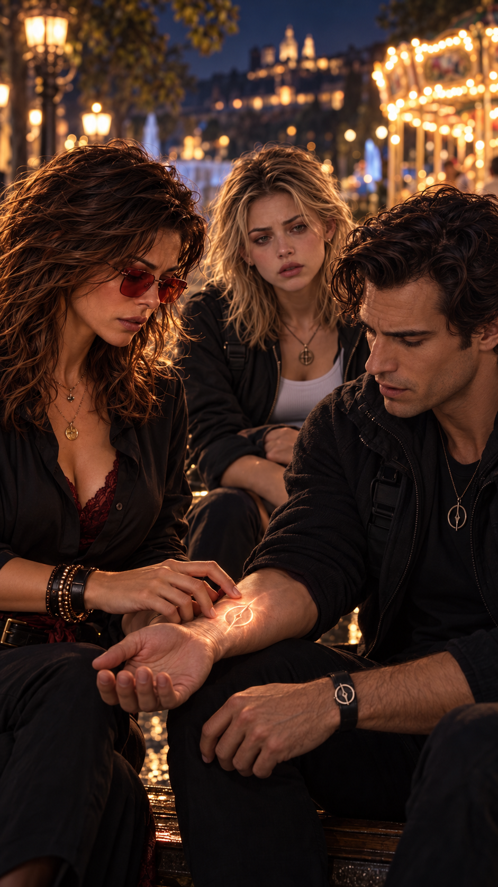
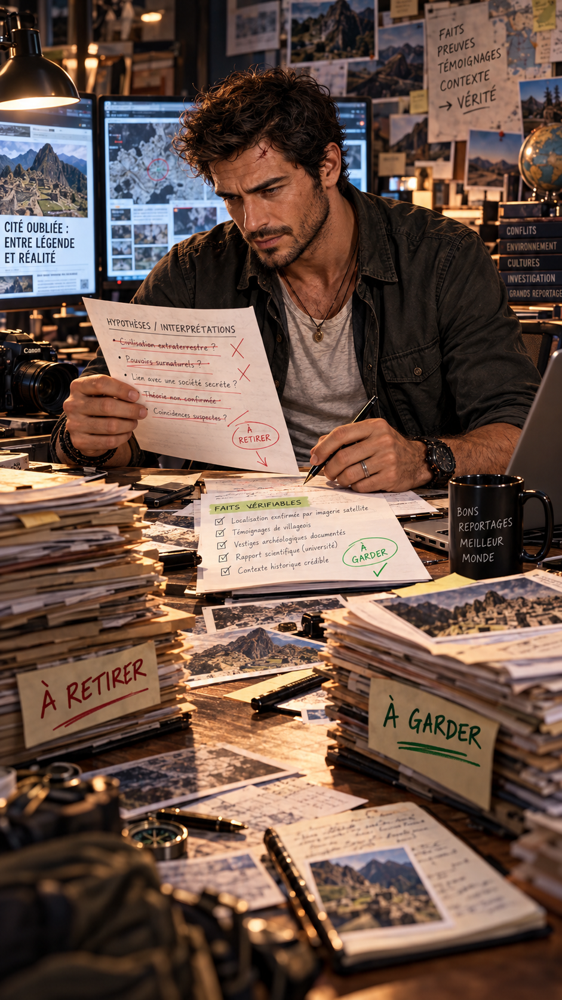
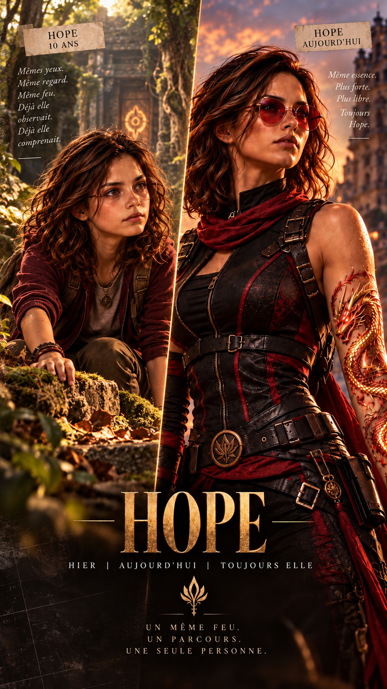

Lucy n’a toujours aucune nouvelle de Root.
Elle est étonnée.
Et, malgré le peu de temps depuis lequel elles se connaissent, elle commence à s’inquiéter.
Root devait être rentrée depuis plusieurs jours.
Lucy décide finalement de lancer une recherche avec IA2.
Elle découvre rapidement que Root n’est toujours pas signalée comme étant revenue sur le territoire américain.
Lucy constate sans grande surprise qu’elle voyage énormément.
Avec son métier, cela n’a rien d’anormal.
Mais IA2 relève quelque chose de beaucoup plus troublant.
Root était présente dans plusieurs des mêmes pays que la Tueuse Caméléon.
Et durant les mêmes périodes.
IA2 — Dossier Root Tempass
Lucy fixe les données quelques secondes.
— Ça commence à faire beaucoup de coïncidences.
Pourtant, son instinct lui souffle presque immédiatement que quelque chose ne va pas dans cette hypothèse.
IA2 lui rappelle alors qu’un lien émotionnel s’est créé entre elle et Root au cours de leur soirée au restaurant et que cela peut fausser son jugement.
Lucy ne peut pas totalement le nier.
En très peu de temps, elle s’est attachée à Root.
Sans réellement savoir pourquoi.
Mais les coïncidences sont nombreuses.
IA2 ajoute que Root possède également d’impressionnantes capacités de combat.
Lucy soupire.
— Tu as raison. Elle pourrait correspondre au profil de la femme que nous recherchons.
Elle secoue néanmoins la tête.
— Mais je n’y crois pas. Quelque chose au fond de moi me dit que ce n’est pas elle.
IA2 lui rappelle que tous ces éléments peuvent n’être que des coïncidences.
Ou, au contraire, constituer les premiers indices à charge contre Root.
— Si nous découvrons un lien sérieux, tu devras la confronter.
Lucy acquiesce.
— Je sais. Et tu me connais suffisamment pour savoir que je ne dérogerai pas à mon devoir.
Faits ou instinct ?
Elle décide alors de creuser davantage.
Elle veut tout savoir sur Root Tempass.
Et pour cela, elle demande l’aide de Clive.
Celui-ci se montre étrangement hésitant.
— Il y a quelque chose que je ne t’ai jamais raconté.
Lucy le regarde avec méfiance.
— Je sens que ça va me plaire.
Clive esquisse un sourire embarrassé.
— J’ai essayé de cambrioler l’hacienda de Root.
Lucy le fixe.
— Pardon ?
— Et son musée.
— Clive…
— Plusieurs fois.
Lucy reste silencieuse quelques secondes.
— Et ?
Clive soupire.
— Je n’ai jamais réussi à lui voler quoi que ce soit.
Lucy éclate presque de rire.
— Attends. Tu es sérieux ?
— Très sérieux.
— Le Magicien n’a pas réussi à cambrioler une archéologue ?
— Tu peux te moquer si tu veux, mais j’arrive à peine à pénétrer dans ses propriétés. Dès que je suis à l’intérieur, je suis détecté et littéralement reconduit vers la sortie.
— Elle a des gardes ?
— Non.
— Une équipe de sécurité privée ?
— Pas vraiment.
— Alors quoi ?
Clive devient soudain beaucoup plus sérieux.
— Ton amie Root possède le système de sécurité le plus sophistiqué que j’aie jamais rencontré.
Lucy l’observe attentivement.
— À ce point-là ?
— À ce point-là.
Il poursuit :
— Je ne suis même pas certain que l’armée ou certaines installations gouvernementales disposent d’un système aussi évolué.
— Qu’est-ce qu’il a de particulier ?
Clive réfléchit.
— Il semble presque autonome.
Lucy arque un sourcil.
— Presque ?
— Je sais qu’en théorie un système pareil ne devrait pas exister.
Puis il la regarde.
— Quoique… tu as bien créé IA2.
— Continue.
— Quoi qu’il en soit, ce système n’est certainement pas commercialisé. Et s’il existe ailleurs, seules quelques personnes doivent connaître son existence.
Clive se penche légèrement vers elle.
— Il utilise des sortes de drones miniatures.
— Armés ?
— Pas réellement pour tuer. Mais suffisamment pour te faire comprendre que tu n’es pas le bienvenu.
Il reprend :
— Ils me tendent des pièges, me filment, anticipent mes déplacements et me poussent exactement là où ils veulent que j’aille.
Lucy fronce les sourcils.
— Ils anticipent ?
— C’est ça le plus étrange.
Clive cherche ses mots.
— J’ai l’impression de jouer une partie d’échecs contre quelque chose qui possède toujours plusieurs coups d’avance.
— Tu veux dire qu’il apprend de tes réactions ?
— Exactement.
Il poursuit :
— À chacune de mes tentatives, le système était différent. Plus efficace. Plus adapté à ma manière d’agir.
— Combien de fois as-tu essayé ?
Clive hésite.
— Beaucoup.
— Combien ?
— Je ne sais pas.
Lucy lui adresse un regard moqueur.
— Tu ne sais pas ?
— D’accord. Beaucoup trop.
Elle sourit.
— Tu n’aimes vraiment pas perdre.
— Je ne perds jamais.
Lucy lève un sourcil.
— Apparemment si.
Clive soupire.
— À part chez Root Tempass.
Puis il ajoute, presque vexé :
— Avant elle, rien ne m’avait jamais résisté.
Lucy éclate de rire.
— Tu veux vraiment me faire croire qu’un système de sécurité est venu à bout du Magicien ?
— Oui.
— Je suis sûre que tu exagères.
— Pas du tout.
Clive retrouve son sérieux.
— Il apprend. Je suis presque certain qu’il utilise une forme d’intelligence artificielle dédiée à la sécurité.
— Mais tu es toujours vivant.
— Parce qu’il n’est pas programmé pour tuer.
Il poursuit :
— Son objectif semble être de détecter, d’étudier, de neutraliser et de faire fuir l’intrus.
Puis il ajoute :
— Et crois-moi, il étudie vraiment l’intrus.
Lucy reste attentive.
— À chacune de mes visites, il connaissait mieux mes habitudes.
Clive secoue la tête.
— Lors de ma dernière tentative, le message était parfaitement clair : échec et mat.
Comprendre le système
Lucy sourit.
— Tu dramatises.
— Pas cette fois.
Il la regarde sérieusement.
— J’ai compris qu’il me laissait encore repartir, mais que je ne devais plus revenir.
— Et tu as obéi ?
— Oui.
Lucy le dévisage.
— Là, tu commences vraiment à m’inquiéter.
Clive sourit.
— Moi aussi, ça m’a inquiété.
Lucy réfléchit.
— Dans ce cas, il va falloir que je me débrouille autrement.
Elle semble contrariée par sa propre conclusion.
— Si je veux comprendre Root, je dois me rapprocher d’elle.
Puis elle ajoute plus doucement :
— Entrer dans son quotidien. Comprendre son environnement. Sa vie.
Clive la regarde.
— Et si elle est vraiment la Tueuse Caméléon ?
Lucy baisse légèrement les yeux.
L’idée semble sincèrement lui déplaire.
— Alors je ferai ce qui doit être fait.
— Même si tu l’apprécies ?
Lucy relève les yeux.
— Même si je l’apprécie.
Clive hésite.
— Si c’est elle, elle pourrait te tuer.
Lucy esquisse un sourire.
— Ce n’est pas certain.
— Lucy…
— Je ne suis pas un contrat.
Elle poursuit :
— Et si je la confronte, elle n’aura ni l’effet de surprise ni le temps de préparer son intervention.
— Tu prends beaucoup de risques avec cette théorie.
— La Tueuse Caméléon est méthodique. Méticuleuse. Rapide. Elle prépare tout.
Lucy regarde les données devant elle.
— Sans préparation, j’aurais peut-être une chance.
Puis son expression change.
— Mais avant tout, il faut retrouver Root.
— Elle devait rentrer quand ?
— Il y a une semaine.
Lucy commence à faire défiler les informations.
— Et depuis, aucune entrée sur le territoire. Aucun message. Aucune réponse.
— Elle voyage beaucoup.
— Je sais.
Lucy secoue la tête.
— Mais quelque chose ne colle pas.
— Quoi ?
— Elle sait que je travaille dans la police.
Lucy réfléchit à voix haute.
— Si elle était réellement la Tueuse Caméléon, disparaître immédiatement après notre rencontre et cesser de me répondre serait une erreur grossière.
— Elle pourrait vouloir te faire croire exactement ça.
Lucy le regarde.
— Possible.
Puis elle reprend :
— Mais ce n’est pas la seule chose qui me dérange.
Elle marque une pause.
— Root ne m’a pas donné l’impression d’être quelqu’un qui disparaît sans raison.
Clive la fixe.
— Tu la connais depuis combien de temps déjà ?
Lucy lui lance un regard.
— Très drôle.
Puis elle redevient sérieuse.
— Soit elle est partie ailleurs.
— Soit ?
— Soit il lui est arrivé quelque chose.
Lucy se lève.
— Et je n’aime vraiment pas cette deuxième possibilité.
Elle regarde Clive.
— Alors on creuse.
— Tout ?
— Tout.
Un sourire apparaît sur le visage de Clive.
— Ça, j’aime bien.
Lucy lui répond :
— Au travail.
Une fois arrivée à l’aéroport de Đồng Hới, à une cinquantaine de kilomètres de sa destination finale, Root s’assure immédiatement qu’elle n’a pas été suivie.
Puis elle se met en route sans perdre de temps.
Sa mission est claire :
retrouver la boîte que Hope lui a demandé de ramener.
La boîte de Pandore.
Root est historienne, archéologue et aventurière.
Une sorte d’Indiana Jones ou de Lara Croft des temps modernes.
Grâce à Peter, elle dispose également des technologies les plus avancées dont elle pourrait avoir besoin sur le terrain.
À cela s’ajoute son extraordinaire sens de l’observation et sa compréhension instinctive du comportement humain, deux capacités qu’elle a énormément développées au contact de Hope.
Root possède un véritable talent pour analyser les gens.
Leurs gestes.
Leurs réactions.
Leurs intentions.
Elle suit scrupuleusement les indications que Hope lui a fournies.
Après avoir traversé une forêt dense et plusieurs cours d’eau, elle approche enfin de l’entrée secrète de la grotte.
Mais quelque chose la dérange.
Depuis un moment, elle ressent une présence.
Malgré toutes les précautions prises pour ne pas être suivie, Root sait qu’elle n’est pas seule.
Elle se sent observée.
Elle n’entend rien.
Ne voit rien.
Mais son instinct ne cesse de l’alerter.
Elle déploie alors un drone miniature afin de scruter les alentours.
Vision thermique.
Détection électromagnétique.
Analyse des mouvements.
Rien.
Root observe les données quelques secondes.
Puis elle comprend.
Si son instinct lui affirme que quelqu’un est là alors que les appareils de Peter ne détectent absolument rien, il n’existe qu’une possibilité réellement inquiétante.
Le Fantôme de l’Ombre.
Amy.
Hope l’avait prévenue.
Quelque chose est là
Repérer le Fantôme
Observe le visuel et tente de trouver Amy.
Root décide immédiatement d’utiliser l’une des techniques que son mentor lui a enseignées.
Elle ne pense pas pouvoir semer Amy définitivement.
Mais elle n’en a pas besoin.
Il lui suffit de gagner suffisamment de temps pour atteindre l’entrée de la grotte sans en révéler l’emplacement.
Root modifie plusieurs fois son itinéraire, disparaît volontairement de certaines zones de visibilité et utilise le terrain pour brouiller sa progression.
Commence alors un étrange jeu de pistes.
Root contre un adversaire qu’elle ne voit jamais.
Pendant plusieurs jours, elle avance, détourne son trajet, revient sur ses pas, efface certaines traces et en crée volontairement de fausses.
Tout cela lui fait perdre un temps précieux.
Bien plus que ce qu’elle avait prévu.
Mais finalement, l’une des astuces enseignées par Hope porte ses fruits.
Root obtient quelques heures d’avance.
Peut-être moins.
Cela suffira.
Semer le Fantôme
Elle rejoint l’entrée dissimulée de la grotte de Sơn Đoòng et s’y engouffre sans être aperçue.
Une fois à l’intérieur, elle s’arrête.
Elle observe une dernière fois l’extérieur.
Amy est-elle encore quelque part là-bas ?
Impossible à savoir.
Root s’enfonce un peu plus dans la grotte.
Puis elle regarde l’immensité qui s’étend devant elle.
— Très bien…
Elle soupire.
— Comment suis-je censée retrouver une boîte à peine plus grosse que ma main dans une grotte qui s’étend sur des kilomètres, avec certaines galeries suffisamment vastes pour engloutir des immeubles entiers ?
Elle lève les yeux vers les profondeurs obscures.
— Hope… dans quoi m’as-tu encore embarquée ?
Après une dernière vérification destinée à s’assurer que personne ne l’a suivie, Root poursuit son avancée.
Plusieurs mini-drones la précèdent.
D’autres restent volontairement en retrait.
Tous sont équipés de détecteurs de mouvement, de scanners électromagnétiques et de capteurs thermiques.
Ils sécurisent sa progression tout en cartographiant minutieusement chaque recoin accessible de la grotte.
Ils permettent également à Root d’être avertie du moindre danger.
Ou de l’arrivée d’un visiteur indésirable.
Grâce à des lunettes à vision infrarouge reliées au système de cartographie des drones, Root avance relativement rapidement.
Puis elle finit par atteindre ce que les indications de Hope appellent :
la Cascade des Secrets Enfouis.
Lorsqu’elle la découvre, Root s’immobilise.
Elle est époustouflée.
La chute d’eau, d’une hauteur impressionnante, produit une musique douce et presque irréelle.
À ses pieds, la rivière forme plusieurs vasques naturelles aux nuances turquoise et émeraude.
Stalactites et stalagmites scintillent sous les rares rayons de lumière qui traversent le plafond de la grotte.
Un fin brouillard flotte dans l’air.
À certains endroits, l’ouverture située très haut au-dessus donne presque l’impression d’être à ciel ouvert.
Root reste quelques secondes sans bouger.
Puis elle se reprend.
Elle cherche le passage indiqué dans les documents de Hope et finit par trouver un accès derrière la cascade.
Observer autrement
Une fois de l’autre côté, elle s’assoit en tailleur.
Elle ferme les yeux.
Respire.
Et médite.
Progressivement, le bruit de la cascade semble disparaître.
Ou plutôt se transformer.
Root ressent quelque chose.
Une présence familière.
La sensation que Hope se trouve tout près d’elle.
Puis une voix semble naître à l’intérieur de son esprit.
— Tu y es.
Root ne bouge pas.
— Maintenant, laisse-toi aller. Ressens. Écoute tout ce qui t’entoure. Ne cherche pas seulement à observer la grotte.
La voix de Hope semble devenir plus claire.
— Fais corps avec elle.
— Écoute-la.
— Et elle t’indiquera où se trouve la boîte.
Root inspire profondément.
— Hope… cette sensation…
Elle peine à trouver ses mots.
— Elle m’envahit. Je la sens. Je l’entends. C’est incroyable. C’est…
Hope lui répond :
— Tu descends directement des Parques. Tu portes en toi une part de la mémoire des générations qui t’ont précédée.
Root reste immobile.
— Ce que tu ressens maintenant, c’est cette connexion que tu as passé ta vie entière à chercher sans savoir qu’elle existait.
— Ne lutte pas contre elle.
— Unis-toi à ce qui t’entoure.
— Et laisse venir les réponses.
Un sourire apparaît lentement sur le visage de Root.
— Merci, Hope.
Elle ouvre légèrement les yeux.
— Je serai très bientôt de retour à tes côtés au Mexique, Maître Unique.
Root reste ainsi un long moment.
Immobile.
Comme si elle absorbait chaque vibration, chaque sensation, chaque information présente autour d’elle.
La connexion
Lorsqu’elle ouvre finalement les yeux, quelque chose semble avoir changé.
Elle se lève.
Sans hésitation, elle se dirige vers la gauche de la cascade.
Elle plonge sa main droite dans le rideau d’eau tout en prenant appui de la main gauche contre la paroi rocheuse.
Son corps se plaque contre la pierre.
Puis, à hauteur de son cœur, elle commence à tâtonner la roche.
Ses doigts rencontrent une cavité.
Root y glisse la main.
Et en retire une petite boîte.
Elle tient entièrement dans sa paume.
Sa surface est recouverte de gravures anciennes.
Root la retourne avec précaution.
Malgré son apparence, l’objet est d’une légèreté presque impossible.
Elle ressent soudain une envie irrépressible.
Comme si quelque chose lui demandait de rapprocher la boîte de son cœur.
Root hésite.
Puis elle dégrafe légèrement sa chemise et pose l’objet directement contre sa peau.
Au premier contact…
la boîte se désagrège.
Root retient son souffle.
La matière semble se dissoudre contre elle jusqu’à disparaître entièrement.
À sa place apparaît progressivement une marque.
Une cascade.
La transformation
Un tatouage aux couleurs éclatantes, presque irréelles, dans lequel semblent avoir été intégrés les symboles qui recouvraient autrefois chacune des faces de la boîte.
Root passe doucement ses doigts dessus.
Elle se sent soudain envahie par une sensation de bonheur intense.
Mais aussi par autre chose.
Des connaissances.
Des impressions.
Des souvenirs qu’elle ne reconnaît pas.
Un savoir immense dont elle ignore encore comment se servir.
Puis l’un de ses drones l’alerte.
Root reprend immédiatement ses esprits.
Elle n’est plus seule.
Quelqu’un approche de l’entrée de la grotte.
Amy.
Elle en est presque certaine.
Impossible de ressortir par le même chemin.
L’entrée secrète ne doit surtout pas être découverte.
Root regarde autour d’elle.
Son regard s’arrête sur les profondeurs situées derrière la Cascade des Secrets Enfouis.
Elle écoute son intuition.
Et décide de la suivre.
Elle s’enfonce davantage dans la roche.
Quelques minutes plus tard, elle atteint une rivière souterraine dont le courant forme une sorte de gigantesque toboggan naturel.
Root l’observe.
— Évidemment.
Elle sourit malgré elle.
— Pourquoi prendre une sortie normale ?
Elle rappelle les drones les plus proches.
Puis elle se laisse glisser dans le courant.
L’eau l’emporte brutalement.
Les drones capables de la suivre s’engagent derrière elle tandis que les autres rejoignent leur trajectoire programmée.
Pendant de longues minutes, Root est entraînée à travers les profondeurs de la roche.
Puis, soudain, la lumière.
Le courant la projette finalement dans le lit d’une rivière située à plusieurs kilomètres de la grotte.
Root reprend son souffle.
Elle regarde autour d’elle.
Aucune présence.
Aucun signe d’Amy.
Elle rappelle ses drones.
Cette fois, elle possède une avance considérable.
Root baisse les yeux vers la marque apparue sur sa poitrine.
La boîte de Pandore n’existe plus.
Du moins…
plus sous la forme d’une boîte.
Elle sourit.
Puis reprend sa route.
Direction le Mexique.
Hope l’attend.
Hope a enterré son frère, Ted.
Elle est désormais la dernière représentante de la famille Awake par le sang.
Ted était marié. Sa femme et sa fille adoptive ne manqueront cependant de rien. Elles peuvent compter sur Hope, qui a décidé de reprendre en main les affaires de son frère.
Et elle n’a pas perdu de temps.
Elle a vendu l’emplacement de l’ancien restaurant où Ted a été assassiné et transformé une grande partie de son hacienda en un restaurant français haut de gamme.
Grâce aux nouvelles technologies de Peter, elle a également entièrement repensé la sécurité de la propriété.
Extérieur.
Intérieur.
Accès.
Surveillance.
Tout est sous contrôle.
Un système extrêmement sophistiqué protège désormais l’hacienda, sans que les visiteurs puissent réellement s’en rendre compte.
Betty et Anna vivent à seulement quelques kilomètres de l’hacienda des Awake.
Leur propriété est elle aussi immense.
Une magnifique hacienda mêlant architecture mexicaine traditionnelle et conception moderne, pensée selon des principes bioclimatiques et équipée d’un important système domotique.
Elle possède une piscine, de vastes terrasses et un splendide jardin fleuri.
Betty s’est entourée d’une équipe de sécurité et de plusieurs employés de maison afin de faciliter leur quotidien et, surtout, d’assurer leur protection.
Betty n’est pas mariée.
Elle est bien trop occupée — et probablement beaucoup trop obsédée par son travail — pour avoir réellement laissé une place à une relation durable dans sa vie.
Mais malgré son dévouement presque absolu à la recherche, une chose passe avant tout :
Anna.
Rien ni personne ne pourrait se mettre entre elles.
Leur affection et leur complicité sont presque fusionnelles.
Anna, maintenant âgée de dix-neuf ans, est une jeune femme pleine de vie qui s’intéresse à presque tout.
Elle est particulièrement douée, aussi bien intellectuellement que physiquement.
Ses connaissances sont multiples et augmentent chaque jour.
Elle connaît énormément de monde, évolue dans des milieux très différents, mais possède finalement assez peu de véritables amis.
Anna aime profondément la vie.
Et semble vouloir absorber tout ce qu’elle peut lui offrir.
Ce jour-là, Anna est en route pour rejoindre un petit groupe d’amis.
Elle traverse le Parc des Délires, suivie de très près par ses gardes du corps, qui ne la quittent pratiquement jamais.
Soudain, plusieurs hommes surgissent.
Tout va très vite.
Ils s’en prennent directement à Anna.
Ils veulent l’enlever.
Ses gardes du corps interviennent immédiatement.
Ils font tout ce qu’ils peuvent pour empêcher l’enlèvement, protégeant Anna au péril de leur vie.
Mais les assaillants sont trop nombreux.
Trop organisés.
Chaque mouvement semble avoir été anticipé.
Comme si toute l’opération avait été préparée jusque dans les moindres détails.
Un à un, les gardes du corps tombent.
Anna tente de résister.
Mais plusieurs hommes parviennent à la maîtriser et commencent à l’entraîner de force vers un véhicule qui les attend non loin de là.
Puis, soudain…
Une femme surgit.
Elle s’interpose entre Anna et ses ravisseurs.
Quelques secondes suffisent.
Ses gestes sont d’une précision stupéfiante.
Rapides.
Fluides.
Presque impossibles à suivre.
Les assaillants tombent les uns après les autres.
Pourquoi les gardes échouent-ils ?
Anna reste sidérée.
La femme attrape sa main et la ramène immédiatement auprès du seul garde du corps encore conscient.
Elle regarde Anna et lui dit calmement :
— Ça va aller maintenant. C’est terminé. Vous ne risquez plus rien.
Anna la regarde sans comprendre.
Hale, le garde du corps, traduit immédiatement en espagnol.
Puis il s’adresse à l’inconnue :
— Elle ne parle pas votre langue. Merci pour votre aide. Vous n’avez pas idée de l’importance de ce que vous venez de faire en…
Il s’interrompt.
Son regard rencontre celui de Hope.
Quelque chose change immédiatement dans son expression.
Il la fixe pendant quelques secondes.
Puis incline discrètement la tête.
Un salut presque imperceptible.
Anna remarque l’échange, sans parvenir à le comprendre.
Elle demande à Hale de traduire :
— Comment pourrais-je vous remercier de m’avoir sauvée de ces hommes ? Je vous dois probablement la vie.
Hale transmet ses paroles.
Hope répond simplement :
— Je vous ai seulement tendu la main. Faites-en autant un jour pour quelqu’un qui en aura besoin, et nous serons quittes.
Anna reste silencieuse.
Hale également.
Tous deux semblent surpris par sa réponse.
Hope reporte alors son attention sur le garde du corps.
Elle s’approche de lui.
— Combien de langues parlez-vous ?
— Sept.
Au moment où Hale répond, Hope saisit son avant-bras droit pour l’aider à se relever.
Elle le regarde droit dans les yeux.
Puis sa main glisse lentement le long de son bras jusqu’à son poignet.
Une marque apparaît progressivement sur sa peau.

Reconnaître Hale
Hale baisse immédiatement les yeux.
Il est stupéfait.
À l’intérieur de son poignet droit vient d’apparaître un tatouage thermosensible.
La marque des Sentinelles de la Lumière.
Hope la reconnaît immédiatement.
Hale, lui, semble surtout sidéré qu’elle ait réussi à la faire apparaître devant eux.
Personne ne prononce un mot.
Anna sent parfaitement qu’il se passe quelque chose.
Mais elle ne comprend absolument pas quoi.
Elle regarde Hope.
— Comment vous appelez-vous ?
Hale traduit.
Anna poursuit :
— Et comment pourrais-je vous joindre ? J’aimerais beaucoup vous revoir.
Cette fois, Hope lui répond directement.
En espagnol.
— Je m’appelle Hope.
Anna ouvre de grands yeux, surprise de l’entendre soudain parler sa langue.
— Je vais être en retard au restaurant. On m’attend. Je dois partir.
Hope sourit légèrement.
— Au plaisir.
Puis elle se tourne vers Hale.
Son expression change.
— Prenez bien soin d’elle, Sentinelle.
Hale se fige.
Hope ajoute :
— Le temps est devenu précieux. À partir de maintenant, il nous est compté.
Elle s’éloigne.
Quelques instants plus tard, d’autres membres de l’équipe de sécurité arrivent.
Ils prennent immédiatement en charge Anna et Hale.
Encore tremblante, Anna est reconduite à l’hacienda.
Tout au long du trajet, Hale ne cesse de penser à Hope.
Anna également.
Betty, prévenue de la tentative d’enlèvement, abandonne immédiatement son travail et se précipite auprès de sa fille.
Hale, lui, sait qu’une chose vient de changer.
Hope fait désormais partie de leur vie.
Il avait senti, dès qu’il avait croisé son regard, qu’elle appartenait à son ordre.
Puis il avait vu ses capacités.
Sa maîtrise.
Sa façon de combattre.
Et surtout…
elle avait fait apparaître sa marque.
À cet instant, il avait compris.
Le Maître Unique.
La Protectrice.
Il devait la retrouver.
Absolument.
Il devait lui parler et recevoir de nouvelles instructions.
Quelque chose venait de se mettre en marche.
Et plus rien ne serait désormais comme avant.
Anna raconte tout à sa mère.
Betty écoute le récit avec stupeur.
Une inconnue.
Une femme française.
Capable de neutraliser presque seule un groupe d’hommes qui venait de mettre à terre une équipe entière de professionnels.
Et qui disparaît ensuite comme si de rien n’était.
Betty et Anna arrivent rapidement à la même conclusion :
elles veulent savoir qui est Hope.
Betty demande à Hale de faire discrètement des recherches et, surtout, de tenter de la retrouver afin qu’elles puissent la remercier correctement d’avoir sauvé Anna.
Quelques jours plus tard, une invitation arrive à l’hacienda.
Inauguration d’un nouveau restaurant français haut de gamme.
L’établissement se trouve à seulement quelques kilomètres.
Anna regarde immédiatement sa mère.
— C’est peut-être elle.
— Qui ça ?
— Hope ! Elle a parlé d’un restaurant. Et elle est française.
Betty examine l’invitation.
— Je n’en sais rien. Je vais me renseigner.
— Il faut qu’on y aille.
— Anna…
— Je veux y aller. Je suis sûre que c’est elle.
Anna regarde sa mère avec son air le plus convaincant.
— Et en plus, c’est un restaurant français. Tu sais à quel point j’adore la cuisine française.
Elle sourit.
— Et si je ne me trompe pas, tu commences à l’apprécier toi aussi.
Betty la fixe.
— Ce n’est vraiment pas le moment de plaisanter avec ça.
— Maman, on ne va quand même pas se priver de l’excellence de la cuisine française à cause de ce petit incident.
Betty la regarde, stupéfaite.
— Tu appelles ça un petit incident ?
Anna comprend qu’elle est peut-être allée un peu loin.
— Tu aurais pu mourir !
Betty inspire profondément.
— Je vais me renseigner. Si je suis certaine que nous ne courons aucun risque, nous irons.
Anna sourit immédiatement.
— Merci !
— Pas si vite.
Betty ajoute :
— En attendant, je double ta protection. Et tu ne sors plus de la propriété.
Le sourire d’Anna disparaît.
— Quoi ? Tu me confines ici ?
— Ma chérie, seulement le temps de repenser entièrement ta sécurité.
Betty essaie de la rassurer.
— Ça ne durera pas. Peut-être une journée. Deux au maximum.
Puis un sourire apparaît sur son visage.
— Profites-en pour apprendre le français.
Anna fronce les sourcils.
— Pourquoi ?
— Ça pourra toujours servir si tu veux discuter avec ta mystérieuse sauveuse, Hope.
Anna retrouve instantanément son sourire et saute au cou de sa mère.
— Je t’adore, tu le sais ?
— Oui, oui.
Betty rit.
— Allez. File apprendre le français si tu veux pouvoir lui parler.
Puis elle ajoute :
— Si c’est réellement elle qui nous a invitées à cette inauguration, évidemment.
Anna s’éloigne.
— C’est elle. Je le sais. Je le sens.
Elle se retourne une dernière fois.
— Tu vas voir, Man, elle est géniale !
Betty la regarde partir avec un sourire.
Puis son expression change.
Elle se rend dans la cuisine et se sert un verre de vin.
Quelques minutes plus tard, elle se retrouve seule devant l’immense baie vitrée, son verre à la main, observant le jardin fleuri.
Elle réfléchit.
Quelqu’un vient d’essayer d’enlever sa fille.
Une inconnue surgit au bon moment et la sauve.
Puis, quelques jours plus tard, elles reçoivent une invitation dans un restaurant qui pourrait appartenir à cette même femme.
Betty n’aime pas les coïncidences.
Elle sort son téléphone.
Et appelle Lucy.
Après quelques banalités échangées, Betty finit par aller droit au but.
— Lucy, est-ce que tu pourrais faire une recherche approfondie pour moi ?
Le ton de sa voix suffit à alerter immédiatement sa sœur.
— Qu’est-ce qui se passe ?
Betty hésite.
— Quelqu’un a essayé d’enlever Anna.
Un silence.
— Quoi ?
— Elle va bien.
— Betty…
— Elle va bien, je te le promets.
Betty regarde par la baie vitrée.
— Mais j’ai besoin de savoir à qui j’ai affaire.
Sa voix tremble légèrement malgré elle.
— J’ai besoin de toi. Quelque chose se prépare et je ne suis pas du tout rassurée.
Lucy répond immédiatement :
— Bien sûr. Tout ce que tu veux.
— Je veux que tu te renseignes sur une Française qui vient de reprendre l’hacienda Awake.
Lucy écoute.
— C’est une gigantesque propriété située à environ deux kilomètres de chez nous.
— Son nom ?
— Je ne connais que son prénom : Hope.
Betty poursuit :
— Apparemment, elle est cheffe cuisinière.
— Et ?
— Elle est extrêmement douée en arts martiaux.
Un silence.
— À quel point ?
— Elle a empêché l’enlèvement d’Anna après que toute son équipe de sécurité ait été neutralisée.
Lucy ne répond pas immédiatement.
Betty poursuit :
— Tu comprends pourquoi j’ai besoin d’en savoir davantage.
— Oui.
— Je dois savoir si je peux lui faire confiance.
Betty hésite avant d’ajouter :
— Ou si tout cela n’était qu’une mise en scène.
— Tu penses qu’elle aurait pu organiser l’enlèvement elle-même ?
— Je n’en sais rien !
La voix de Betty devient plus ferme.
— Peut-être pour pouvoir se rapprocher d’Anna. Peut-être pour autre chose.
Elle soupire.
— Je ne veux écarter aucune hypothèse.
Puis elle poursuit :
— Et nous sommes invitées à l’inauguration de son nouveau restaurant français la semaine prochaine.
Lucy comprend immédiatement.
— Et Anna veut absolument y aller.
Betty laisse échapper un léger rire nerveux.
— Tu connais ta nièce.
— Oui.
— Et tu sais qu’elle adore la cuisine française.
— Je vois parfaitement le problème.
Betty reprend :
— J’ai donc intérêt à savoir exactement qui est Hope avant qu’Anna ne la revoie.
Sa voix devient plus dure.
— Je refuse que ma fille soit déçue.
Puis plus grave :
— Et surtout qu’elle soit mise en danger.
Lucy répond immédiatement :
— Je vais chercher.
— IA2 ?
— Dès que nous aurons raccroché.
— Merci, petite sœur.
— Je te tiens au courant dès que j’ai quelque chose.
Betty hésite.
— Lucy…
Sa sœur comprend immédiatement.
— Tu veux que je vienne ?
Betty ferme les yeux.
— Oui.
Puis elle ajoute, beaucoup plus doucement :
— S’il te plaît.
Lucy ne répond pas tout de suite.
— Anna sera heureuse de te voir.
Betty hésite.
— Et moi, je serai beaucoup plus rassurée si tu es là.
Elle poursuit :
— Je ne connais personne capable de mieux la protéger que toi.
— Betty…
— Je sais que je t’en demande beaucoup.
Elle regarde encore le jardin.
— Mais j’aimerais que tu restes avec elle jusqu’à ce qu’on découvre qui a tenté de l’enlever et pourquoi.
— Tu sais que je peux gérer mon équipe à distance.
— C’est précisément pour ça que je te le demande.
Un léger silence.
Puis Lucy répond :
— Qu’est-ce que je ne ferais pas pour toi ?
Betty sourit enfin.
— Je prépare mon départ et je prends le premier vol disponible.
Puis le ton professionnel de Lucy reprend immédiatement le dessus.
— En attendant, tu doubles la sécurité.
— C’est déjà prévu.
— Anna ne quitte pas la propriété.
— Elle proteste déjà.
— Elle protestera davantage quand j’arriverai.
Betty rit légèrement.
— Et tu filtres strictement toutes les personnes qui demandent à vous voir.
— D’accord.
— Si tu peux, reste avec elle jusqu’à mon arrivée.
Puis Lucy ajoute :
— Et dès que je serai là, je ferai un audit complet de ton système de sécurité et de ton équipe avant même de défaire mes valises.
— Parfait.
Betty semble enfin respirer un peu mieux.
— Merci, Lucy.
— À très vite.
Peter, comme souvent, travaille sur une nouvelle invention.
Les idées semblent ne jamais manquer dans son esprit.
Depuis quelque temps, presque toutes ses innovations poursuivent le même objectif : protéger, dissuader et, lorsque cela devient nécessaire, neutraliser une menace, qu’il s’agisse d’un individu, d’un objet ou d’une action hostile.
Il termine actuellement les derniers réglages de plusieurs prototypes qu’il compte emporter au Mexique pour Hope.
Root et elle sont d’ailleurs souvent les premières à tester ses inventions.
Et, bien souvent, celles qui les lui inspirent.
Max, quant à lui, vient d’achever plusieurs semaines d’enquête.
Il prépare maintenant le montage d’un reportage qui risque de faire beaucoup de bruit.
Son sujet :
les mouvements sociaux qui secouent régulièrement la France.
Au départ, Max pensait simplement enquêter sur certaines grèves dont l’organisation et le déclenchement lui semblaient étranges.
Puis il avait remarqué des coïncidences.
Encore.
Et encore.
Jusqu’à ce qu’elles cessent d’en être.
Ses recherches l’ont finalement conduit vers des documents, des transactions et des témoignages suffisamment solides pour révéler l’existence d’un réseau beaucoup plus discret.
Un cercle extrêmement restreint d’industriels, de financiers et d’intermédiaires fortunés.
Des hommes et des femmes dont les noms n’apparaissent jamais dans les manifestations.
Jamais dans les slogans.
Jamais devant les caméras.
Et pourtant, certains d’entre eux influencent secrètement des événements destinés à servir leurs propres intérêts.
Ils financent parfois des intermédiaires.
Soutiennent certaines organisations.
Amplifient des tensions déjà existantes.
Et orientent discrètement des personnes qui, elles, sont souvent persuadées d’agir pour une cause parfaitement légitime.
Ces individus rassemblent ensuite autour d’eux des citoyens sincèrement convaincus de défendre leurs droits, leur avenir ou celui de la société.
La majorité d’entre eux ignore totalement qu’une autre stratégie peut se jouer derrière leurs revendications.
Max ne considère pas ces mouvements comme artificiels.
Les mécontentements existent.
Les difficultés aussi.
Mais son enquête montre que certains savent exploiter ces colères, les encourager ou les orienter au moment opportun.
Et parfois, pendant que toute l’attention publique se concentre ailleurs, d’autres décisions passent presque inaperçues.
Une loi.
Un contrat.
Une acquisition.
Une réforme.
Une opération financière.
Un changement suffisamment discret pour que peu de personnes comprennent immédiatement son importance.
Max a également découvert quelque chose de plus inquiétant.
Le réseau qu’il observe ne se limite probablement pas aux mouvements sociaux.
Certaines personnes qui gravitent autour de lui apparaissent également dans des affaires beaucoup plus sombres.
Déstabilisations économiques.
Financements clandestins.
Manipulations de l’information.
Et peut-être même des actions dont les conséquences ont provoqué des morts.
Max ignore encore jusqu’où s’étend réellement ce système.
Mais une chose est certaine :
ce qu’il vient de découvrir dépasse très largement la France.
S’il révélait immédiatement l’intégralité des informations en sa possession, les conséquences pourraient être considérables.
Il le sait.
Et pour la première fois depuis longtemps, Max hésite devant une vérité.
Pas parce qu’il doute de ses preuves.
Mais parce qu’il doute de ce qu’elles pourraient provoquer.

Comprendre l’influence
Il s’assoit seul devant ses écrans.
Depuis toujours, son principe est simple :
les faits et rien que les faits.
Mais existe-t-il des vérités que l’on ne peut pas jeter brutalement au visage du monde ?
Max repense à tout ce qu’il a découvert.
Les individus se pensent libres.
Ils prennent des décisions.
Choisissent leurs opinions.
Leurs combats.
Leur façon de vivre.
Mais combien de ces décisions ont été influencées avant même qu’ils ne sachent qu’un choix existait ?
Publicité.
Information.
Peur.
Désir.
Pression sociale.
Intérêts politiques.
Pouvoir économique.
Max comprend que la manipulation n’a pas toujours besoin de chaînes.
Il suffit parfois de convaincre quelqu’un qu’il a librement choisi la direction qu’on lui avait préparée.
Il regarde son reportage.
Puis murmure :
— Freedom is not free… and perhaps it is never absolute.
La liberté n’est jamais gratuite.
Et peut-être n’est-elle jamais absolue.
Max sait néanmoins qu’il ne peut pas tout dévoiler.
Pas encore.
Il décide donc de procéder autrement.
Créer le doute.
Pas la peur.
Donner suffisamment d’éléments pour que ceux qui souhaitent regarder plus loin puissent commencer à se poser des questions.
Tout en évitant de lancer des accusations qu’il ne serait pas encore capable de démontrer entièrement.
Que doit publier Max ?
Il retire certaines parties.
En conserve d’autres.
Montre les connexions vérifiables.
Les faits établis.
Les contradictions.
Les zones d’ombre.
Mais il ne livre pas toutes ses conclusions.
Il laisse au spectateur la possibilité de construire les siennes.
C’est aussi cela, selon lui, le rôle d’un journaliste.
Ne pas expliquer aux gens ce qu’ils doivent penser.
Leur montrer ce qu’ils n’avaient peut-être pas vu.
Et leur donner envie de chercher.
Max souhaite ainsi envoyer deux messages.
Le premier à ceux qui agissent dans l’ombre :
quelqu’un vous regarde.
Le second à ceux qui pensent ne rien pouvoir changer :
rien n’est encore perdu.
Il faut parfois simplement avoir le courage d’ouvrir les yeux.
De regarder les choses sous plusieurs angles.
De refuser les réponses trop faciles.
Et, lorsqu’arrive le bon moment, d’agir.
Max repense au colibri.
Un être minuscule face à quelque chose qui le dépasse.
Mais qui continue malgré tout à faire sa part.
Son reportage ne changera probablement pas le monde.
Pas aujourd’hui.
Mais il peut créer une question.
Et une question peut parfois devenir le début d’une prise de conscience.
Max termine le montage.
Il vérifie une dernière fois chaque information.
Chaque source.
Chaque image.
Puis il valide la version définitive.
Son travail en France est terminé.
Une autre enquête l’attend désormais.
Le Mexique.
Plus précisément :
le cartel Santalucibel.
Max prépare ses affaires.
Quelques heures plus tard, il contacte Hope.
— J’espère que ton restaurant a une chambre de libre.
Hope reconnaît immédiatement sa voix.
— Pourquoi ? Tu comptes enfin venir travailler sérieusement ?
Max sourit.
— Très drôle. Mon reportage français est terminé.
Il ferme sa valise.
— Prochaine destination : le Mexique.
— Et Santalucibel ?
— Principalement.
Hope reste silencieuse quelques secondes.
— Alors sois prudent, Max.
— Tu me connais.
— C’est justement pour cette raison que je te le demande.
Il rit.
— Je t’envoie les détails de mon arrivée.
— Fais ça.
Max raccroche.
Il regarde une dernière fois les images de son reportage.
Puis l’écran affiche les premières informations qu’il a recueillies sur son prochain sujet.
Élie Santalucibel.
Max sourit légèrement.
Une enquête venait de se terminer.
Une autre ne faisait que commencer.
Lucy est entièrement absorbée par ses recherches sur Root et Hope.
Avec l’aide d’IA2, elle explore méthodiquement le web, les bases de données auxquelles elle a accès et certaines zones beaucoup moins fréquentables du réseau afin de retrouver la trace de Root et d’obtenir davantage d’informations sur Hope.
Soudain, IA2 l’interrompt.
— J’ai retrouvé Root Tempass.
Lucy se redresse immédiatement.
— Où est-elle ?
— Elle a embarqué ce matin sur un vol en provenance du Vietnam.
Lucy attend la suite.
— Destination : Mexique.
Un sourire apparaît sur son visage.
— Génial.
Elle se reprend aussitôt.
— Enfin… façon de parler.
Puis elle murmure :
— Je vais justement y être moi aussi. Et cette fois, j’ai une excellente raison d’y aller.
Elle réfléchit quelques secondes.
— IA2, cherche-moi tout événement inhabituel survenu au Vietnam au cours des quinze derniers jours. Tout ce qui pourrait avoir un lien avec Root : incident archéologique, disparition, accès inhabituel à un site protégé, intervention des autorités, mouvement aérien étrange… tout.
— Recherche lancée.
Pendant ce temps, IA2 poursuit ses investigations sur Hope.
Mais les résultats sont étrangement pauvres.
Nom :
Hope Awake.
Nationalité :
française.
Profession connue :
cheffe cuisinière.
Depuis quatre ans, elle est propriétaire du restaurant Le Monde d’ici et d’ailleurs, situé sur la Côte d’Azur.
Et presque rien d’autre.
Lucy fronce les sourcils.
— Quatre ans seulement ?
— Les premières traces administratives fiables correspondant à Hope Awake apparaissent à cette période.
— Et avant ?
— Aucune donnée exploitable.
Lucy fixe l’écran.
— Personne n’apparaît de nulle part à l’âge adulte.
— Techniquement, si.
Lucy lui lance un regard.
— Merci, IA2.
Elle poursuit :
— Cherche la famille Awake.
Les données commencent à défiler.
Puis une information attire immédiatement son attention.
Ted Awake, ancien propriétaire de l’hacienda mexicaine désormais occupée par Hope, a lui-même un passé inhabituel.
À l’adolescence, Ted avait été recueilli puis adopté après la disparition de sa famille à la suite du crash d’un Airbus A380 en Chine.
Lucy se fige.
— Attends.
Elle relit l’information.
— Un crash en Chine ?
— Confirmé.
— Et Hope aurait quel âge aujourd’hui ?
IA2 lui répond.
Lucy fait rapidement le calcul.
Quelque chose vient de s’allumer dans son esprit.
— Donne-moi la liste complète des passagers.
IA2 s’exécute.
Noms.
Âges.
Nationalités.
Informations concernant les victimes.
Lucy parcourt la liste.
Puis s’arrête.
Une fillette.
Douze ans.
Son corps n’avait jamais été retrouvé.
Reconstituer le passé de Hope
Lucy rapproche son visage de l’écran.
— IA2…
— Oui ?
— Cherche toutes les photographies disponibles de cette enfant.
Plusieurs images apparaissent.
Des photographies administratives.
Quelques clichés familiaux retrouvés dans les archives.
Lucy les observe.
Elle sent son instinct se réveiller.
Le nom Awake n’apparaît pourtant pas sur la liste des passagers.
Et malgré cela…
quelque chose lui semble familier.
Elle place à côté l’une des rares photographies récentes de Hope.
— Fais-moi une simulation.
— Précise la demande.
— Suppose que cette enfant n’est pas morte dans le crash.
Lucy réfléchit.
— Fais vieillir son visage jusqu’à l’âge actuel de Hope et compare le résultat avec les photographies dont nous disposons.
IA2 commence l’analyse.
Morphologie du visage.
Écartement des yeux.
Structure osseuse.
Mâchoire.
Implantation.
Proportions.

Quelques instants plus tard, le résultat apparaît.
Concordance morphologique très élevée.
Lucy reste immobile.
— Probabilité ?
— Suffisamment élevée pour justifier une enquête approfondie. Les données disponibles ne permettent toutefois pas une identification certaine.
Lucy sourit légèrement.
— Là, tu me plais davantage.
Elle observe alternativement le visage de l’enfant et celui de Hope.
— Donc cette gamine pourrait être elle.
— Hypothèse plausible.
Lucy s’enfonce dans son fauteuil.
— Très bien.
Puis elle se redresse presque aussitôt.
— Continue à creuser.
— Dans quelle direction ?
— Toutes.
Elle commence à compter sur ses doigts.
— Le crash. La fillette disparue. Ted Awake. Son adoption. La réapparition de Hope des années plus tard. Tout ce qui pourrait relier ces éléments.
Puis elle ajoute :
— Et trouve-moi le premier vol disponible pour le Mexique.
Lucy reste quelques instants devant ses écrans.
Elle essaie de remettre mentalement toutes les pièces dans le bon ordre.
Root Tempass.
Archéologue extrêmement réputée.
Une femme capable de neutraliser plusieurs hommes.
Protégée par un système technologique inconnu extrêmement sophistiqué.
Présente dans plusieurs pays au même moment que la Tueuse Caméléon.
Disparue pendant plusieurs jours.
Réapparue au Vietnam.
Et maintenant en route vers le Mexique.
Puis :
Hope Awake.
Une Française dont l’existence administrative semble commencer seulement quatre ans plus tôt.
Une combattante capable de mettre hors d’état de nuire les ravisseurs d’Anna alors que des professionnels entraînés avaient échoué.
Probablement liée à un crash aérien survenu des années auparavant en Chine.
Et peut-être cette enfant de douze ans dont le corps n’a jamais été retrouvé.
Lucy se lève et commence à marcher dans la pièce.
— Qu’est-ce que tu es allée faire au Vietnam, Root ?
Puis son regard revient vers Hope.
— Et toi…
Elle observe la photographie de la fillette.
— Comment une enfant de douze ans aurait-elle pu survivre à un crash pareil ?
Une autre question lui vient immédiatement.
— Et surtout… où aurait-elle vécu pendant toutes ces années ?
Pourquoi aucune école ?
Aucun médecin ?
Aucun dossier administratif ?
Aucune photographie identifiable ?
Rien.
Puis, soudainement, elle pense à Ted.
Lucy se rassoit.
— IA2, revenons sur Ted Awake.
Les informations réapparaissent.
Lucy réfléchit à voix haute.
— Si Hope est réellement cette enfant et si Ted est bien son frère…
Elle s’interrompt.
— Pourquoi Ted n’était-il pas dans cet avion avec eux ?
Elle vérifie son âge.
— Il avait quoi ? Quatorze ou quinze ans ?
Une nouvelle série de questions apparaît.
Pourquoi était-il resté au Mexique ?
Qui l’avait pris en charge immédiatement après le crash ?
Pourquoi avait-il ensuite été adopté ?
Pourquoi le nom de Hope n’apparaissait-il nulle part ?
Et surtout…
pourquoi Hope ne réapparaissait-elle publiquement que des années plus tard ?
Lucy regarde la carte du monde affichée devant elle.
France.
Vietnam.
Mexique.
Puis elle revient au Mexique.
Root s’y rend.
Hope vient de s’y installer.
Betty et Anna y vivent.
Et Lucy elle-même s’apprête à les rejoindre.
Elle murmure :
— Le Mexique…
IA2 ne répond pas.
Lucy plisse les yeux.
— Pourquoi tout le monde finit-il au Mexique ?
Elle repense à l’appel de Betty.
À la tentative d’enlèvement d’Anna.
À cette étrange inconnue arrivée exactement au bon moment.
Puis à Root qui disparaît et réapparaît à quelques milliers de kilomètres de là.
Betty avait utilisé une phrase qui lui semblait excessive quelques heures auparavant.
Elle ne lui paraît plus aussi excessive maintenant.
Quelque chose se prépare.
Lucy regarde toutes les informations qui s’entrecroisent devant elle.
Il y a beaucoup trop de questions.
Et beaucoup trop peu de réponses.
Elle referme son ordinateur.
— Très bien.
Elle attrape sa veste.
— Direction le Mexique.
Root vient tout juste d’atterrir par le dernier vol de la journée.
Hope l’attend à l’aéroport.
Quelques minutes plus tard, elles prennent la route en direction de l’hacienda de Ted à bord du Jeep Wrangler Unlimited de Hope.
Pendant le trajet, Root raconte son périple au Vietnam.
Elle lui explique comment elle a réussi à semer Amy pendant suffisamment longtemps pour pénétrer dans la grotte sans lui révéler l’emplacement de l’entrée.
Root est beaucoup trop impatiente pour attendre leur arrivée à l’hacienda.
Elle ouvre légèrement son chemisier.
— Regarde.
Hope jette un rapide coup d’œil dans sa direction.
Sur la peau de Root apparaît désormais la marque laissée par la boîte de Pandore lorsqu’elle s’est désagrégée.
Une magnifique cascade, parcourue des symboles qui recouvraient autrefois l’objet.
Hope sourit immédiatement.
— Oh… elle est magnifique.
Puis elle demande :
— Tu as apprécié, j’espère ?
Root éclate de rire.
— Aussi surprenant que cela puisse paraître, j’ai adoré.
Elle observe à nouveau la marque.
— Je n’ai ressenti aucune douleur. Au contraire. Juste quelques picotements… et franchement, ce n’était pas désagréable du tout.
Hope lui adresse un regard amusé.
Root comprend immédiatement.
— Qu’est-ce que tu attends ? Vas-y. Touche-la.
Hope garde une main sur le volant et approche doucement l’autre de la marque.
Elle ne la touche même pas véritablement.
Sa paume reste à peine à un centimètre de la peau de Root.
Pourtant…
la marque réagit.
Root retient son souffle.
Les contours de la cascade s’illuminent.
Puis les symboles s’éveillent à leur tour, parcourus de reflets multicolores.
Comme si quelque chose circulait entre la main de Hope et la marque.
Une énergie.
Des informations.
Ou peut-être les deux.
Hope et Root se regardent.
Pendant quelques secondes, aucune des deux ne parle.
Puis elles éclatent de rire.
Un rire spontané.
Un rire de soulagement.
De bonheur.
Et, quelque part, de victoire.
Lorsqu’elles arrivent enfin à l’hacienda, Hope conduit Root jusqu’aux appartements qui lui ont été préparés.
Puis elles se retrouvent dans la cuisine.
Hope ouvre une bouteille de vin.
Elles s’installent et continuent à discuter encore un moment.
Le Vietnam.
Amy.
La grotte.
La boîte.
Et tout ce qui les attend désormais au Mexique.
Mais la fatigue finit par les rattraper.
Elles décident finalement d’aller se coucher.
Au moment où chacune s’apprête à partir dans une direction différente, Hope se retourne brusquement.
— Ah ! J’allais oublier.
Root s’arrête.
— Quoi ?
— Tu as eu le temps de voir avec Clark s’il pouvait se libérer pour l’inauguration du restaurant ?
Root sourit avec malice.
— Oui.
Puis elle ajoute :
— Et tu sais très bien que j’ai un charme fou. Il ne peut ni me résister ni se passer de moi.
Hope lève les yeux au ciel.
Root poursuit, amusée :
— Il sera là. Il arrive vendredi et restera trois jours.
— Super.
Hope réfléchit quelques secondes.
— Demain, Peter et Max arrivent en fin d’après-midi. Pas besoin d’aller les chercher, ils se débrouilleront.
Elle sourit.
— Tu connais Peter.
Root rit.
— Malheureusement.
— Donc nous avons toute la journée pour nous.
Hope se rapproche légèrement.
— Si tu es partante, je voudrais te montrer quelque chose.
— Quoi ?
— Un cénote que j’ai découvert récemment.
Root relève immédiatement les yeux.
— Un cénote ?
— Oui. Et pas n’importe lequel.
Hope sourit.
— Il est assez particulier. Et vraiment magnifique.
Root n’a déjà plus besoin d’être convaincue.
— Évidemment que je suis partante.
Hope rit.
— Parfait. Alors bonne nuit.
— Bonne nuit.
Root commence à s’éloigner, puis se retourne.
— Petit-déjeuner devant la piscine ?
Hope sourit.
— Yes, of course.
Root acquiesce, satisfaite.
— À demain.
— À demain.
À l’hacienda des Flores, tout le personnel s’affaire depuis le matin pour préparer l’arrivée de Mme Lucy Adverse.
Tous savent qu’elle va tout passer au crible.
Et après la tentative d’enlèvement d’Anna, personne ne s’attend à ce qu’elle laisse passer la moindre défaillance.
Depuis l’incident, Hale, chef de la sécurité, est devenu le garde du corps personnel d’Anna.
Il ne la quitte pratiquement plus d’une semelle, tout en restant suffisamment discret pour que la jeune femme puisse continuer à vivre normalement.
Anna reste libre.
Mais elle est désormais beaucoup mieux protégée.
Lucy a prévenu Betty qu’elle devrait arriver pour le déjeuner.
Elle a également précisé qu’elle ne serait pas seule et qu’il faudrait prévoir une chambre supplémentaire pour son ami, Clive Lynx.
Betty rejoint Anna près de la piscine.
— Anna, Lucy ne devrait plus tarder. Tu viens nager un peu avec moi avant son arrivée ?
— Deux minutes ! Je termine la leçon de français que j’ai commencée et j’arrive.
Betty la regarde avec méfiance.
— Ne me dis pas que…
Elle s’interrompt.
— Tu as déjà terminé tous les cours ?
Anna dévale les escaliers en courant pour rejoindre sa mère.
Elle enlève rapidement ses vêtements, plonge dans la piscine et nage jusqu’à Betty.
— Alors, je ne te le dis pas.
Betty éclate de rire.
Anna poursuit :
— Mais à partir de maintenant, il va falloir me trouver quelqu’un avec qui parler français.
— C’est tout trouvé…
Anna ne lui laisse même pas le temps de terminer.
— Je sais ! Hope !
Son visage s’illumine.
— Je vais pouvoir parler français avec Hope.
Betty secoue immédiatement la tête.
— Non. Je ne parlais pas de Hope.
Anna affiche une mine déçue.
— Nous ne connaissons même pas cette femme.
Betty désigne discrètement Hale, qui surveille les alentours à distance.
— Hale parle couramment plusieurs langues. Il pourra t’aider à pratiquer ton français. Et en même temps, il pourra encore mieux assurer ta protection.
Anna la regarde, incrédule.
— Man…
Elle baisse la voix.
— Hale ? Tu veux vraiment que je passe mon temps à discuter avec Hale ?
Betty sourit.
— Pourquoi pas ?
— Il est adorable et très serviable, mais de quoi veux-tu qu’on parle ?
Anna réfléchit à peine une seconde avant d’ajouter :
— Alors qu’avec Hope… j’ai tellement de questions à lui poser. Et elle pourrait sûrement m’apprendre énormément de choses.
Betty relève immédiatement ce détail.
— Ah bon ? Tu as déjà des questions à lui poser ?
— Évidemment.
— Anna, on ne sait absolument rien d’elle.
— Raison de plus.
Anna sourit.
— C’est une excellente excuse pour faire connaissance.
Puis elle ajoute :
— Et parler français.
Betty soupire.
— Nous ne savons même pas si c’est réellement elle qui nous a invitées.
— Bien sûr que si.
— Non, Anna.
Betty insiste :
— Nous ne savons même pas avec certitude si elle habite ou travaille à l’hacienda Awake.
Anna lui adresse un sourire plein de malice.
— Tante Lucy arrive.
Betty comprend immédiatement où elle veut en venir.
— Anna…
— Elle va vite le découvrir.
Puis elle ajoute :
— C’est aussi pour ça que tu lui as demandé de venir, non ?
Betty hésite.
— Entre autres.
— Parfait.
Anna semble soudain avoir tout organisé.
— Dès que tante Lucy sera là, nous irons toutes les trois à l’hacienda Awake voir Hope.
Betty écarquille les yeux.
— Pardon ?
— Avec Lucy.
Anna sourit.
— On va visiter en avant-première le nouveau restaurant et vérifier que Hope n’est pas maléfique.
Betty soupire.
— Anna, je n’ai jamais dit une chose pareille.
— Presque.
— Non.
Betty reprend :
— Je veux simplement m’assurer que tu ne te mets pas inutilement en danger.
Elle regarde Lucy.
— Alors soyez prudentes.
Anna sourit.
— Je sais.
Puis, en regardant sa mère :
— Love is weakness.
Elle l’embrasse une nouvelle fois.
— I love you, Man.
Betty secoue la tête avec un sourire.
Lucy et Anna quittent l’hacienda en direction de la propriété Awake.
Le jet privé de Peter Evanos atterrit avec près d’une heure d’avance.
Peter et Max échangent un regard satisfait.
Ils viennent d’avoir exactement la même idée.
Faire une surprise aux filles.
À peine descendus de l’appareil, Peter sort l’un de ses nouveaux dispositifs.
Max l’observe avec curiosité.
— Qu’est-ce que c’est encore ?
Peter sourit.
— Ma dernière merveille.
Quelques instants plus tard, une créature ressemblant à un magnifique oiseau prend son envol.
Peter l’a baptisée :
le Phénix.
Examiner le Phénix
Sa mission est simple :
localiser Hope et Root.
Une fois leur position trouvée, le Phénix doit rester à proximité, observer leur environnement et veiller discrètement sur elles jusqu’à l’arrivée de Peter et Max.
Max suit l’oiseau des yeux.
Même en sachant ce qu’il regarde, il peine à croire qu’il s’agit d’une création technologique.
Ses mouvements sont naturels.
Son plumage.
Sa respiration.
Ses réactions.
Tout semble vivant.
— Peter…
— Oui ?
— Qu’est-ce que tu as fabriqué ?
Peter sourit fièrement.
— Je t’avais dit que j’avais de nouveaux jouets.
Max continue d’observer le Phénix.
— Là, ce n’est plus un jouet.
Il regarde son ami.
— Pour la première fois depuis que je te connais, je ne comprends même pas comment tu as réussi à fabriquer quelque chose d’aussi réaliste.
Il désigne l’oiseau.
— À moins de l’ouvrir pour regarder ce qu’il y a à l’intérieur, personne ne peut deviner que ce n’est pas un véritable animal.
Peter reste silencieux quelques secondes.
Puis il prend un air faussement innocent.
— Bon…
Max le connaît suffisamment pour comprendre immédiatement.
— Qu’est-ce que tu as fait ?
— Rien de très grave.
— Peter.
— Tout dépend de ce que tu appelles « grave ».
Max croise les bras.
Peter finit par avouer :
— J’ai utilisé certains travaux de Betty Flores.
Max le fixe.
— « Utilisé » ?
Peter grimace légèrement.
— Disons que… cette fois, je n’ai pas exactement demandé son autorisation.
— Peter !
— Je sais.
Il lève les mains.
— Mais j’avais atteint mes limites en biogénétique. Et Betty possède des travaux extraordinaires.
— Tu as piraté les recherches de Betty Flores ?
— Une toute petite partie.
Max ne répond pas.
— D’accord. Peut-être un peu plus qu’une toute petite partie.
Peter soupire.
— Betty veut tout contrôler. Et obtenir une collaboration avec elle peut prendre une éternité.
Puis un sourire amusé apparaît sur son visage.
— Et il faut aussi avouer qu’elle me déconcentre énormément.
Max ferme les yeux.
— Ne me dis pas…
— Cette femme est absolument magnifique.
— Peter…
— Je suis sérieux. À chaque fois que je la vois, je perds la moitié de mes neurones.
Max éclate de rire.
Peter poursuit :
— Mais elle, évidemment, ne voit absolument rien.
Il prend un ton dramatique.
— Je suis invisible.
— Pauvre homme.
— Elle n’a d’yeux que pour son travail et pour Anna.
Peter regarde de nouveau dans la direction prise par le Phénix.
— Bref. J’ai repris certains de ses travaux et, après quelques modifications…
Il sourit fièrement.
— J’ai réussi à unir ma technologie à ses recherches en génétique.
Max comprend peu à peu.
— Le Phénix.
— Exactement.
Peter contemple sa création avec admiration.
— Le résultat est là.
Puis il prend son air le plus satisfait.
— Pour une fois, c’est un homme qui fait un enfant dans le dos d’une femme.
Max le regarde avec stupéfaction.
Peter éclate de rire.
— Techniquement, je peux dire que Betty et moi avons un fils.
— Surtout, ne lui dis jamais ça.
— Pourquoi ?
— Parce que j’aimerais bien assister vivant à l’inauguration du restaurant.
Peter rit.
— Le Phénix est probablement la plus belle chose que j’aie jamais créée.
Max regarde l’oiseau disparaître au loin.
— Je dois reconnaître une chose.
— Laquelle ?
— À ma connaissance, personne n’est capable de fabriquer quelque chose comme ça.
Il regarde Peter.
— Tu es un véritable génie.
Puis il ajoute avec amusement :
— Pour ne pas dire un dieu.
Peter bombe immédiatement le torse.
— Arrête. Mes chevilles vont gonfler.
Max lui donne une tape sur l’épaule.
Peter ajoute :
— Et surtout, n’oublie pas…
Il sourit.
— La mère du Phénix ignore encore totalement l’existence de son enfant.
Max éclate de rire.
— Tu es mort.
— Probablement.
Après avoir rapidement installé leurs affaires, Lucy et Clive entreprennent de faire le tour complet de la propriété.
Ils inspectent les accès.
Les caméras.
Les angles morts éventuels.
Les habitudes des équipes.
Les procédures d’urgence.
Ils cherchent la moindre faiblesse dans le système de sécurité.
Une fois leur inspection terminée et quelques modifications effectuées, Clive regarde Lucy.
— Les équipes sont à leur poste. Les caméras fonctionnent. Tout le système est en place.
Il sourit.
— Plus rien ne me retient ici.
— Qu’est-ce que tu prépares ?
— Je vais aller faire un tour. Et d’ici ce soir, je reviendrai jouer les intrus.
Lucy acquiesce.
— Histoire de vérifier si tout est réellement au point.
— Exactement.
Lucy prend un air innocent.
— Excellente idée.
Puis elle ajoute :
— Il y a justement une magnifique hacienda à environ deux kilomètres d’ici.
Clive la regarde aussitôt avec intérêt.
— Ah oui ?
— Si tu t’ennuies, tu pourrais rendre une petite visite de courtoisie à sa nouvelle propriétaire.
Un sourire apparaît immédiatement sur le visage de Clive.
Lucy lève un doigt.
— Une visite.
— Oui, oui.
— Pas de shopping.
Le sourire de Clive disparaît.
— Pardon ?
— Ce n’est pas un magasin.
Clive la regarde, faussement offensé.
— Tu vois comment tu es ?
— Comment je suis ?
— Tu me montres un nouveau jouet et tu me donnes seulement le droit de le regarder.
Lucy croise les bras.
— Pas d’y jouer.
— Exactement !
— Quel drame.
Clive réfléchit.
— Ce n’est pas très…
Lucy le fixe.
— Ce n’est pas très quoi ?
Clive choisit soigneusement ses mots.
— Pas très cool.
Lucy éclate de rire.
— Mais je t’aime bien, alors tu as de la chance.
Clive poursuit :
— Et puis, comme c’est toi qui paies les vacances, ça compense.
— Clive…
Lucy lui montre la sortie.
— File.
Elle rit.
— Allez, ouste. Hors de ma vue.
Clive s’incline théâtralement.
— À vos ordres.
Il s’éloigne.
Anna rejoint Lucy juste au moment où il quitte la propriété.
— Ton petit copain s’en va ?
Lucy tourne immédiatement la tête vers elle.
— Il va se dégourdir les jambes et visiter un peu les environs.
Puis elle ajoute :
— Et pour ta gouverne, jeune insolente, ce n’est pas mon petit ami.
Anna sourit.
— Bien sûr.
— Il ne connaît pas la région. Il n’est jamais venu ici.
Lucy passe un bras autour des épaules de sa nièce.
— Et moi, je reste avec toi. Tu m’as trop manqué.
Les deux femmes s’installent au bord de la piscine.
Elles discutent avec cette complicité naturelle qu’elles ont toujours eue.
Puis le téléphone de Lucy vibre.
Un message.
Elle baisse les yeux.
Root.
Lucy se redresse légèrement.
Le message est long.
Lucy relit le message une seconde fois.
Elle est contente.
Et surtout rassurée.
Root va bien.
Elle répond presque immédiatement.
La réponse de Root arrive quelques instants plus tard.
Lucy sourit.
Root vient de lui révéler qu’elle aussi se trouve au Mexique.
Ça la rassure.
Mais ça éveille immédiatement sa curiosité.
Un restaurant français haut de gamme.
Dans la même région.
Lucy pense aussitôt à l’hacienda Awake.
Serait-ce le même restaurant ?
Root connaîtrait-elle Hope ?
Ce serait tout de même une sacrée coïncidence.
Le puzzle commence à se former
Lucy reste quelques secondes perdue dans ses pensées.
Elle a de plus en plus de mal à imaginer Root comme la Tueuse Caméléon.
Et, au fond d’elle-même, elle espère sincèrement se tromper depuis le début.
Anna l’observe.
— C’est ton petit ami Clive qui t’envoie des messages ?
Lucy lève les yeux.
— Quoi ?
Anna sourit, très satisfaite de son effet.
— Il a peur de nous déranger et préfère t’écrire ? Il ne peut déjà plus se passer de toi ?
— Non !
Lucy rit.
— Comme je te l’ai déjà dit, Clive n’est pas mon petit ami.
Elle hésite.
— D’accord, j’avoue… il est beau garçon. Plutôt attirant. Intelligent.
Anna hausse les sourcils.
— Ah !
— Mais c’est impossible.
— Pourquoi ?
— Parce que c’est impossible.
Anna éclate de rire.
Lucy secoue la tête.
— Et d’où te vient cette idée qu’il serait amoureux de moi ?
Anna prend un air très sérieux.
— Ma mère et toi, vous êtes vraiment pareilles.
— Ça veut dire quoi ?
— Tu ne vois pas comment il te regarde ?
Lucy reste silencieuse.
— Il te dévore des yeux.
Lucy plisse les yeux.
Puis un sourire apparaît.
— Attends une seconde.
Anna comprend trop tard.
— Quoi ?
— Tu viens de dire que ta mère et moi sommes pareilles.
Lucy se rapproche.
— Cela voudrait donc dire qu’un homme regarde ta mère de la même façon.
Anna soupire.
— Tu viens de changer de sujet.
— Complètement.
Lucy sourit.
— Comment s’appelle-t-il ?
— Il est charmant…
Anna grimace.
— Mais absolument pas fréquentable.
— Ça commence bien.
— Élie Santalucibel.
Le sourire de Lucy disparaît immédiatement.
— Quoi ?
— Le chef du cartel Santalucibel.
Lucy fixe sa nièce.
— Anna… qu’est-ce que tu es en train de me raconter ?
— Que cet homme aimerait beaucoup séduire Maman.
— Betty fréquente Élie Santalucibel ?
— Non !
Anna éclate de rire.
— Enfin… pas à ma connaissance.
Puis elle ajoute :
— Mais lui, je crois qu’il aimerait bien.
Lucy reste stupéfaite.
— Tu le connais ?
— Tout le monde le connaît.
Lucy secoue la tête.
— Et je connais ta mère. Il est impossible qu’elle s’intéresse à cette brute.
Elle hésite.
— Bon, d’accord, c’est un très bel homme.
Anna sourit.
— Ah !
— Mais c’est une ordure.
— Je n’ai jamais dit le contraire.
Anna reprend :
— Nous l’avons rencontré dans un restaurant français.
Son expression devient plus sombre.
— Un restaurant qu’il a, soit dit en passant, très probablement fait incendier quelques jours plus tard.
Lucy fronce les sourcils.
— Il y avait un restaurant français ici qui a brûlé récemment ?
— Oui.
Lucy réfléchit.
— Et maintenant Hope ouvre un autre restaurant français à deux kilomètres d’ici ?
Anna retrouve immédiatement son enthousiasme.
— Oui ! À l’hacienda Awake.
— Hope…
Lucy la regarde.
— Qui est donc cette Hope ?
Anna sourit.
— Elle est géniale.
— Ça, j’avais compris.
— C’est elle qui m’a sauvée lorsque ces hommes ont voulu m’enlever.
Lucy devient immédiatement beaucoup plus attentive.
— Raconte-moi exactement ce qui s’est passé.
Anna lui résume l’agression.
Puis elle ajoute :
— Elle inaugure son restaurant samedi soir et nous a invitées.
— Elle vous a invitées personnellement ?
— Nous avons reçu l’invitation quelques jours après.
Anna soupire.
— Mais Maman n’est toujours pas certaine que ce soit vraiment elle.
— Ta mère est surtout inquiète.
— Elle n’a pas l’air d’apprécier Hope.
— Ce n’est pas ça.
Lucy prend un ton plus sérieux.
— Essaie de regarder la situation comme une enquêtrice.
Anna l’écoute.
— Une équipe entière de professionnels n’arrive pas à empêcher ton enlèvement.
— Oui.
— Et une femme seule apparaît au bon moment et réussit à tous les neutraliser.
Anna réfléchit.
— Dit comme ça…
— Ta mère veut simplement comprendre.
Anna sourit.
— Hope est une sorte de ninja des temps modernes.
Lucy éclate de rire.
— Rien que ça ?
— Je suis sérieuse.
Anna cherche ses mots.
— Elle est rapide comme un faucon pèlerin. Plus silencieuse et agile qu’un félin.
Lucy semble de plus en plus intéressée.
— Tu sais quoi ?
— Quoi ?
— J’aimerais beaucoup que tu me présentes ta nouvelle amie.
Anna se redresse immédiatement.
— Sérieusement ?
— Très sérieusement.
Lucy sourit.
— Elle a l’air… intéressante.
Anna bondit presque.
— Alors viens !
— Où ?
— À l’hacienda Awake.
Lucy la regarde.
— Maintenant ?
— Oui ! C’est juste à côté.
Anna s’enthousiasme de plus en plus.
— Comme ça, tu pourras vérifier que c’est bien son restaurant, que c’est elle qui nous a invitées et qu’elle n’a rien à voir avec mon enlèvement.
Elle sourit.
— Et Maman te fait confiance.
Lucy réfléchit quelques secondes.
Puis elle acquiesce.
— Tu sais quoi ? Tu as raison.
Les yeux d’Anna s’illuminent.
— Vraiment ?
— Une petite promenade ne peut pas nous faire de mal.
Anna saute de joie.
— Yes ! Yes ! Yes ! T’es trop géniale !
— Va te changer.
Anna commence à partir.
Puis elle s’arrête brusquement.
Elle se retourne.
— Au fait…
Lucy la regarde avec méfiance.
— Quoi encore ?
— Si Clive n’est pas ton petit ami…
Anna désigne son téléphone.
— Qui est-ce qui te donne ce sourire-là ?
Lucy fronce les sourcils.
— Quel sourire ?
— Celui-là.
Anna sourit malicieusement.
— Celui qui te met des étoiles dans les yeux et du baume au cœur.
Lucy reste bouche bée.
— Du baume au cœur ? Des étoiles ?
— Oui.
— N’importe quoi.
Anna attend.
Lucy soupire.
— Je suis simplement contente d’avoir des nouvelles d’une amie que je n’avais pas pu revoir avant de partir.
Anna sourit encore davantage.
— Une amie ?
— Oui.
— Et ?
— Et elle vient de m’apprendre qu’elle aussi est au Mexique.
Anna ouvre de grands yeux.
— C’est génial ! Vous allez pouvoir vous revoir.
Puis elle ajoute :
— Avec un peu de chance, elle est peut-être même dans le Yucatán.
Lucy lève les yeux.
— Le Mexique est immense, tu sais.
Anna hausse les épaules.
— Oui.
Puis, avec un petit sourire :
— Mais le monde est petit.
Lucy reste immobile.
Elle regarde son téléphone.
Puis Anna.
Elle secoue lentement la tête, amusée.
— Je n’y crois pas… vous vous êtes toutes donné le mot aujourd’hui ou quoi ?
Anna rit.
Lucy lui fait signe de partir.
— Allez. File te changer si tu veux aller voir ta fameuse Hope.
— J’arrive !
Anna disparaît dans la maison.
Lucy reste quelques secondes seule au bord de la piscine.
Son regard revient vers le dernier message de Root.
Le Mexique est grand, mais le monde est petit.
Lucy appelle Clive.
— Alors ? Cette petite visite ? Tu y es ?
Il hésite.
— Euh… presque. Mais j’ai comme une impression de déjà-vu.
— Comment ça ?
— Tu es vraiment certaine de vouloir que je fasse le tour du propriétaire ?
Lucy fronce les sourcils.
— Clive…
— Je te préviens simplement : là, tu ne marches plus vraiment le long de la ligne. Tu commences sérieusement à t’en approcher.
Il marque une pause.
— Fais juste attention à ne pas passer de l’autre côté. Je n’aimerais pas que tu m’en rendes responsable après.
— Arrête tes bêtises. Et pour ta gouverne, j’assume toujours mes actes.
Lucy poursuit :
— Va jeter un œil. J’arrive bientôt avec ma nièce, Anna. Je ne veux surtout pas la mettre en danger.
Clive sourit.
— Tu sais que toi et moi, on se ressemble ?
— Ça recommence…
— Tu aimes vivre en équilibre sur cette fameuse ligne. L’adrénaline, c’est ta drogue.
Puis il ajoute, plus sérieusement :
— Mais n’oublie jamais une chose : freedom is not free.
Lucy reste silencieuse.
— Et le jour que nous redoutons le plus finit toujours par arriver.
— Alors ? Tu fais quoi ?
— À ton avis ?
Clive retrouve immédiatement son ton léger.
— Bien sûr que j’y vais.
Puis il demande :
— Je te ramène quoi ?
— Rien.
— Rien ?
— Tu ne prends absolument rien. Tu observes et tu me fais un rapport.
— Donc je suis ton espion.
— Apparemment.
Clive prend une voix théâtrale.
— Parfait. Alors désormais, appelle-moi Bond… James Bond.
Lucy devine son sourire sans même le voir.
— Très bien, 007.
Puis elle ajoute :
— Et fais attention.
— J’adore quand tu t’inquiètes pour moi.
— File.
Lucy rit.
— Ouste. Du balai.
Puis elle reprend :
— Et surtout, tu dois être reparti avant que j’arrive avec Anna.
— Ne t’inquiète pas. Je vais seulement jeter un œil.
Un silence.
— Et à mon retour, tu auras un plan des lieux meilleur que celui de l’architecte qui a construit l’hacienda.
Clive raccroche.
Il prend la direction de l’hacienda Awake avec la ferme intention d’en comprendre le fonctionnement.
Pourtant, une légère appréhension l’accompagne.
Cette sensation de déjà-vu ne le quitte pas.
Il est loin d’imaginer ce qu’il va découvrir.
Lucy, de son côté, rejoint Betty en attendant qu’Anna soit prête.
Elle profite de ce moment seule avec sa sœur.
— Dis-moi…
Betty la regarde.
Lucy prend un air faussement innocent.
— Il paraît que tu as tapé dans l’œil d’Élie Santalucibel.
Betty la dévisage.
— Lucy… de quoi tu me parles ?
— D’Élie.
— Élie et moi, c’était il y a très longtemps.
Betty soupire.
— Nous étions adolescents. Et tu le sais très bien.
Elle insiste :
— Il n’était pas l’homme qu’il est aujourd’hui.
Puis elle ajoute :
— Et moi non plus, je n’étais pas celle que je suis devenue.
Lucy la regarde attentivement.
— Tu étais là à cette époque. Alors explique-moi où tu veux en venir.
— Anna.
Betty se fige légèrement.
— Quoi, Anna ?
— Elle a compris que toi et Élie vous connaissiez beaucoup mieux que ce que tu lui as laissé croire.
Betty baisse légèrement les yeux.
Lucy poursuit :
— Fais ce que tu veux, mais en ce qui me concerne, je ne lui mentirai pas.
— Lucy…
— Si elle me pose certaines questions, je lui donnerai les réponses correspondant à ce qu’elle me demande.
Betty reste silencieuse quelques secondes.
— Je ne veux pas lui mentir.
Puis elle hésite.
— J’ai juste…
Elle cherche ses mots.
— J’ai changé.
Son regard se perd quelques instants.
— Je ne suis plus aussi naïve.
Elle regarde sa sœur.
— J’ai énormément appris. Et en grande partie grâce à toi.
Lucy ne répond pas.
Betty murmure :
— Love is weakness.
Puis elle ajoute :
— Je ne l’ai jamais oublié.
Un silence.
— Et pourtant, aujourd’hui, il existe un amour auquel je ne pourrais jamais renoncer.
— Anna.
— Oui.
Betty sourit faiblement.
— Elle est mon talon d’Achille.
Son expression change.
— J’ai peur pour elle, Lucy.
— Je sais.
— Non.
Betty secoue la tête.
— J’ai vraiment peur.
Elle poursuit :
— J’ai peur qu’on lui fasse du mal. J’ai peur de ne pas savoir la protéger. Et j’ai peur de la décevoir.
Lucy écoute sans l’interrompre.
— J’ai fait de mon mieux pour l’aider à devenir la meilleure personne possible.
Betty baisse les yeux.
— Mais moi, je suis loin d’être parfaite.
Elle regarde sa sœur.
— Et tu le sais probablement mieux que personne.
Puis un sourire fragile apparaît.
— Je suis heureuse qu’elle t’ait, toi aussi.
— Betty…
— J’ai besoin de toi pour la protéger.
Elle marque une pause.
— Mais surtout pour la conseiller lorsqu’elle ne voudra plus écouter sa mère.
Lucy sourit légèrement.
Betty poursuit :
— Être mère, ça ne s’apprend pas.
Elle réfléchit.
— Personne ne t’apprend comment être avant même de devenir.
Lucy la regarde tendrement.
— Tu sais quoi ?
— Quoi ?
— J’aime la femme que tu es devenue.
Puis elle ajoute :
— Et, honnêtement, j’ai toujours aimé celle que tu étais avant.
Betty sourit.
— Intrépide. Sans peur.
Lucy hésite.
— Mais tes attachements émotionnels ont toujours été ton point faible. Ils t’ont souvent perdue et blessée.
Betty ne conteste pas.
— Et malgré ça, tu as réussi à transformer cette faiblesse en force.
Lucy baisse légèrement la voix.
— Tu ne m’as jamais vraiment donné l’impression d’avoir besoin de moi.
Betty la regarde, surprise.
— Pourtant…
— Je sais.
Lucy sourit.
— Mais je dois t’avouer quelque chose.
Elle hésite à son tour.
— Je suis fière d’être ta sœur.
Betty reste silencieuse.
— Et j’ai longtemps eu l’impression de ne pas être à ta hauteur.
— Lucy…
— Alors oui.
Elle sourit.
— D’une certaine manière, je suis contente que tu aies besoin de moi. Que tu comptes sur moi.
Betty s’approche légèrement.
— Chaque fois que je me suis perdue ou que j’ai été blessée, tu étais là.
Elle prend la main de Lucy.
— C’est aussi grâce à toi que j’ai appris à transformer certaines de mes faiblesses en force.
Elle sourit.
— Je t’ai souvent prise pour modèle.
Lucy paraît sincèrement étonnée.
— Moi ?
— Oui.
Betty rit doucement.
— J’ai toujours pensé que tu étais presque surhumaine.
— Rien que ça ?
— Forte au point de maîtriser tes émotions.
Betty poursuit :
— Jamais trop. Jamais pas assez. Toujours la bonne mesure.
Puis elle ajoute :
— Comme si tu étais constamment en équilibre parfait.
À cet instant, Anna entre dans le salon.
Lucy tourne immédiatement la tête vers elle.
— Anna ! Tu arrives au bon moment.
Elle retire sa main de celle de Betty avec un air théâtral.
— Ta mère et moi étions en train d’escalader le mont Olympe de l’émotion.
Anna rit.
Lucy poursuit :
— Ce qui, tu le sais, ne nous arrive absolument jamais.
Elle désigne Betty.
— Tu viens une fois de plus de me sauver des griffes émotionnelles de ta vampire de mère.
Anna se dirige vers Betty et l’embrasse sur la joue.
— Man, ne l’écoute pas. Elle est jalouse.
Lucy ouvre de grands yeux.
— Pardon ?
— Elle voudrait bien que tu t’occupes d’elle comme tu t’occupes de moi.
Anna attrape ensuite Lucy par la main.
— Man, nous allons faire un tour à l’hacienda Awake.
Betty la regarde immédiatement.
— Vous allez quoi ?
— Avec Lucy.
Anna sourit.
— On va visiter en avant-première le nouveau restaurant et vérifier que Hope n’est pas maléfique.
Betty soupire.
— Anna, je n’ai jamais dit une chose pareille.
— Presque.
— Non.
Betty reprend :
— Je veux simplement m’assurer que tu ne te mets pas inutilement en danger.
Elle regarde Lucy.
— Alors soyez prudentes.
Anna sourit.
— Je sais.
Puis, en regardant sa mère :
— Love is weakness.
Elle l’embrasse une nouvelle fois.
— I love you, Man.
Betty secoue la tête avec un sourire.
Lucy et Anna quittent l’hacienda en direction de la propriété Awake.
Sur le chemin, elles aperçoivent Clive.
Il leur fait immédiatement signe de s’arrêter.
Lucy ralentit.
Clive s’approche.
— Il faut que je te parle.
Son expression est inhabituelle.
— C’est important. Une seconde.
Anna le regarde.
— Clive, tu fais peur. On dirait que tu as vu un fantôme.
Il la fixe.
— Tu es vraiment marrante, toi.
Puis il ajoute :
— Le jour où tu échoueras pour la première fois dans ce que tu fais de mieux, on en reparlera.
Lucy comprend immédiatement.
— Ne me dis pas que…
— Si.
Clive regarde dans la direction de l’hacienda Awake.
— Ta copine Root n’est plus la seule à posséder un système de sécurité ultra haut de gamme, inconnu du marché et probablement issu de technologies militaires ou expérimentales.
Lucy devient immédiatement attentive.
— Le même ?
— Pas nécessairement identique.
Clive poursuit :
— Mais suffisamment proche pour que je reconnaisse la philosophie générale du système.
Il secoue la tête.
— Et une chose pareille ne se trouve pas à chaque coin de rue.
Puis il regarde Lucy.
— Alors soit ta mystérieuse Française et Root se connaissent…
Il marque une pause.
— … soit elles utilisent toutes les deux le même fournisseur.
Lucy reste immobile.
Puis tout s’emboîte soudainement dans son esprit.
— Mais bien sûr…
— Quoi ?
— L’amie de Root.
Anna écoute attentivement.
Lucy poursuit :
— Celle qui lui a appris ses fameux « petits trucs au cas où ».
Elle regarde Clive.
— Hope.
— Tu en es sûre ?
— Non.
Puis elle sourit.
— Mais ça devient une hypothèse sacrément solide.
Elle réfléchit.
— Root me parle d’un restaurant français haut de gamme dans cette région.
— Oui.
— Hope vient justement d’en ouvrir un ici.
— Oui.
— Et les deux disposent de technologies de sécurité similaires.
Clive sourit.
— Ton puzzle commence à avoir une belle gueule.
— Merci, Clive.
Lucy retrouve son sérieux.
— Retourne à l’hacienda Flores.
— Et toi ?
— Je vais à la pêche aux informations.
Clive regarde Anna puis Lucy.
— Tu es sûre que tu ne veux pas que je vous accompagne ?
— Non.
— Je peux être extrêmement discret.
Lucy sourit.
— Justement. Ils t’ont probablement déjà repéré et enregistré.
Clive grimace.
— Charmant.
— Ne t’inquiète pas.
Lucy poursuit :
— Je vais seulement observer, poser quelques questions et me faire ma propre opinion.
— Sois prudente.
— Toujours.
Clive lui lance un regard qui signifie clairement qu’il n’en croit pas un mot.
Puis il retourne vers l’hacienda Flores.
Lucy et Anna reprennent leur route.
Après quelques minutes de silence, Lucy regarde sa nièce.
Anna sourit.
— Vas-y.
— Quoi ?
— Pose-la.
— Pose quoi ?
— La question qui te brûle les lèvres depuis tout à l’heure.
Lucy sourit.
— Puisque tu sais ce que je vais te demander, pourquoi ne pas répondre directement ?
Anna réfléchit.
— Parce que je veux t’entendre me la poser.
Lucy relève un sourcil.
— Pourquoi ?
— Pour que toi aussi, tu te poses exactement la même question à propos de ton amie des SMS.
Cette fois, Lucy comprend.
— Très bien.
Elle regarde la route.
— Pourquoi Hope t’inspire-t-elle autant confiance ?
Anna reste silencieuse.
Lucy poursuit :
— Qu’est-ce qui te fait croire qu’elle est sincère ?
Puis elle ajoute :
— Et qu’elle ne se sert pas de toi ?
Anna réfléchit véritablement avant de répondre.
— Je comprends pourquoi tu doutes.
Elle regarde sa tante.
— Avec tout ce qui s’est passé… et avec ton métier… c’est logique.
Puis elle sourit.
— Et je suis justement contente que tu viennes avec moi.
— Pour que je me fasse ma propre opinion ?
— Oui.
Anna poursuit :
— Ce soir, nous pourrons comparer ce que nous avons ressenti et compris.
Lucy sourit.
— Tu voulais mon avis depuis le début.
— Oui.
Anna ne cherche pas à le nier.
— Ton avis compte énormément pour moi.
Puis son expression devient plus sérieuse.
— Mais ce n’est pas la seule raison.
Lucy attend.
— J’ai envie de revoir Hope.
Anna hésite.
— En fait… j’ai besoin de la revoir.
— Pourquoi ?
— Je n’en sais rien.
Et cette réponse semble sincère.
— Tu connais Maman. Elle ne m’aurait jamais laissée y retourner seule.
Anna regarde Lucy.
— Elle te fait confiance.
— Et toi ?
— Moi aussi.
Anna sourit.
— Mais pas pour les mêmes raisons.
Lucy l’écoute.
— Maman compte sur toi pour me protéger.
Elle ajoute :
— Moi, je compte surtout sur ta franchise.
Lucy ne répond pas.
— Je sais que tu me donneras ton opinion telle qu’elle est.
— Même si elle ne te plaît pas ?
— Surtout si elle ne me plaît pas.
Anna poursuit :
— Tu ne seras ni de mon côté pour me faire plaisir, ni contre moi simplement pour m’empêcher de faire quelque chose.
Lucy sourit.
— Tu me connais assez bien.
Quelques instants plus tard, elles arrivent devant l’hacienda Awake.
Lucy ralentit.
— Eh bien…
Elle observe l’immense propriété.
— Je dois reconnaître que ça commence plutôt bien.
Anna sourit.
— Je te l’avais dit.
— Magnifique hacienda.
Puis Lucy observe les dispositifs presque invisibles intégrés aux environs.
— Et bonjour la sécurité.
À peine le véhicule arrêté devant le grand portail, plusieurs drones apparaissent.
Ils analysent la voiture.
Puis les deux occupantes.
Lucy s’apprête à annoncer son identité lorsque l’un des appareils prend la parole.
— Lucy Adverse. Division de la cybercriminalité, Los Angeles.
Lucy fronce les sourcils.
— Anna Flores. Étudiante en journalisme. Fille de Betty Flores, généticienne de renommée internationale.
Anna regarde Lucy, amusée.
— Impressionnant.
Le drone poursuit :
— Données transmises.
Quelques secondes passent.
— Autorisation en attente.
Puis :
— Autorisation accordée.
Le portail commence à s’ouvrir.
— Bienvenue à l’hacienda Awake.
Lucy et Anna échangent un regard.
Elles pénètrent sur la propriété.
La beauté des lieux les impressionne immédiatement.
Mais Lucy remarque surtout autre chose.
La sécurité est partout.
Extrêmement sophistiquée.
Et pourtant presque invisible.
Elles garent leur véhicule devant l’entrée principale.
Un homme entièrement vêtu de noir vient à leur rencontre.
— Bonjour, Mesdames Adverse et Flores.
Il incline légèrement la tête.
— Madame vous prie de bien vouloir l’excuser de vous faire patienter quelques instants.
Il leur indique le jardin.
— Si vous voulez bien me suivre, elle vous rejoindra près de la piscine dans quelques minutes.
Puis il demande :
— Que puis-je vous servir en attendant ?
Anna réfléchit.
— Qu’est-ce qu’elle boit habituellement ?
L’homme sourit légèrement.
— Pardon ?
— Hope.
Anna poursuit :
— Servez-moi la même chose qu’elle prendrait.
Lucy regarde Anna avec amusement.
Puis elle ajoute :
— Faites de même pour moi, s’il vous plaît.
L’homme sourit davantage.
— C’est amusant.
Lucy le regarde.
— Pourquoi ?
— Madame m’avait dit que vous me demanderiez probablement cela.
Anna et Lucy échangent un regard.
— Je vais donc vous préparer deux Fresh Cactus Frenchies.
Il leur indique le salon extérieur.
— Installez-vous. Vous êtes ici comme chez vous.
Puis il s’éloigne.
Lucy observe les environs.
Du mouvement attire soudain son attention dans le jardin.
— Anna, reste ici.
Anna se lève aussitôt.
— Sûrement pas.
— Anna…
— Je viens avec toi.
Lucy lève les yeux.
Plusieurs drones évoluent silencieusement au-dessus de la propriété.
Tout ce qu’elles font est probablement observé.
Lucy le sait.
Anna aussi.
Elles se dirigent néanmoins vers le jardin.
Puis elles découvrent une vaste plateforme d’entraînement.
Une femme se trouve en son centre.
Hope.
Les yeux bandés.
Plusieurs adversaires l’attaquent simultanément.
Anna reste fascinée.
Lucy également.
Hope neutralise ses assaillants avec une facilité troublante.
Sans même les voir.
Chaque attaque semble anticipée.
Chaque mouvement économisé.
Chaque riposte précise.
Puis un nouvel adversaire apparaît.
Masqué.
Plus rapide que les autres.
Il surgit presque sans bruit et attaque Hope avec une intensité impressionnante.
Cette fois, l’affrontement dure plus longtemps.
Hope esquive avec fluidité.
Bloque.
Dévie.
Contre-attaque.
Puis elle finit par neutraliser l’adversaire.
Mais contrairement aux autres, elle ne l’écarte pas.
Elle lui parle.
— N’attaque pas comme une hyène.
L’adversaire se redresse.
— Tu n’es pas une meute.
Hope reste parfaitement immobile malgré le bandeau qui couvre ses yeux.
— Sois plutôt la lionne.
— Observe.
— Attends.
— Cherche le plus infime changement dans mon mouvement.
L’adversaire attaque de nouveau.
Cette fois, Hope doit réagir légèrement plus vite.
Mais elle reprend néanmoins le contrôle.
— Mieux.
Puis elle ajoute :
— Ne te laisse pas distraire par nos visiteuses.
Lucy se fige.
Anna aussi.
Hope savait donc qu’elles étaient là.
— Lorsque le moment est venu, augmente ta vitesse.
Elle poursuit :
— Ne corrige pas ton geste au dernier instant.
— Fais confiance à ton choix.
Puis :
— Sois le léopard.
L’adversaire se remet en position.
Hope conclut :
— Réussis ou échoue.
— Mais n’essaie pas.
— Fais-le.
Le combattant masqué ne bouge plus.
Plusieurs secondes passent.
Puis, brutalement…
il attaque.
La vitesse est impressionnante.
Hope l’évite de justesse.
Cette fois, l’adversaire parvient presque à la toucher.
Hope le neutralise finalement au sol.
Puis le silence revient.
Elle retire son bandeau.
Tend la main à son adversaire et l’aide à se relever.
Celui-ci retire à son tour son masque.
Lucy reste figée.
— Root…
Anna tourne immédiatement la tête vers elle.
— Tu la connais ?
Root et Hope les regardent.
Puis avancent ensemble dans leur direction.
Lucy secoue lentement la tête.
— Oui.
Elle regarde Anna.
— Comme tu me l’as dit tout à l’heure…
Un sourire apparaît sur son visage.
— Le monde est petit.
Puis elle ajoute :
— Vraiment, vraiment petit.
Anna ouvre de grands yeux.
— Attends…
Elle regarde Root.
Puis Lucy.
— Ne me dis pas que c’est ton amie des SMS ?
Root et Hope les rejoignent précisément à cet instant.
Root sourit.
— Le monde est effectivement très petit.
Puis elle regarde Hope.
— Ou alors le destin possède une façon plutôt particulière de réunir les gens.
Hope répond tranquillement :
— Personne n’échappe complètement à sa destinée.
Elle observe Lucy puis Anna.
— La vraie question est plutôt de savoir si nous sommes prêts à lui faire face…
Puis elle ajoute :
— … ou si nous préférons détourner les yeux jusqu’à risquer de perdre notre propre raison d’être.
Un sourire apparaît ensuite.
— Je ne m’attendais pas à une visite aussi agréable aujourd’hui.
Hope fait signe en direction de la terrasse.
— Venez donc vous rafraîchir.
Puis elle demande :
— James vous a proposé quelque chose à boire, j’espère ?
Anna acquiesce.
— Oui.
Puis elle regarde autour d’elle.
— Mais j’ai une question.
Lucy soupire.
— Anna…
Root intervient.
— Laisse-la.
Elle regarde la jeune femme.
— C’est normal qu’elle se pose des questions.
Puis elle ajoute :
— Nous en avons toutes.
Lucy regarde Root.
— Et elle n’est pas la seule à avoir besoin de réponses.
Hope acquiesce.
— Je m’en doute.
Elle regarde les deux visiteuses.
— Nous répondrons volontiers à certaines de vos questions.
Puis elle ajoute avec calme :
— Mais avant d’en poser une, demandez-vous toujours si vous êtes réellement prêtes à entendre la réponse.
Lucy l’observe.
— Même si elle ne nous plaît pas ?
— Surtout dans ce cas.
Hope poursuit :
— Root et moi ne vous mentirons pas volontairement.
Elle choisit ses mots.
— Mais certaines vérités ne peuvent pas toujours être données entièrement au moment où elles sont demandées.
Root tourne légèrement la tête vers elle.
Hope poursuit :
— La vérité n’est pas seulement une réponse.
— Elle entraîne parfois des conséquences.
Puis elle sourit.
— Mais nous aurons tout le temps de parler.
Elle les invite à rejoindre le salon extérieur.
— James a dû nous préparer des Fresh Cactus Frenchies.
Anna sourit.
— C’est ce qu’il a dit.
— Alors vous allez voir. C’est délicieux.
Les quatre femmes s’installent dans un salon extérieur couvert, à proximité de la piscine.
La vue est spectaculaire.
Depuis cet endroit légèrement surélevé, elles dominent une grande partie de la propriété tout en restant à l’abri des regards extérieurs.
Anna reprend rapidement sa question.
— Les hommes en noir…
Hope sourit.
— Je savais que tu allais commencer par eux.
— Qui sont-ils ?
Hope réfléchit.
— Ils appartiennent à une organisation très ancienne.
Lucy devient immédiatement attentive.
— Laquelle ?
Hope regarde Root.
Puis répond :
Les Sentinelles de la Lumière.
Anna répète doucement :
— Les Sentinelles de la Lumière…
Hope poursuit :
— Pour le moment, imagine-les comme des gardes du corps extrêmement spécialisés.
— Des sortes de ninjas modernes ?
Anna sourit.
Hope rit.
— Si cette comparaison peut t’aider, pourquoi pas.
Puis elle ajoute :
— Ils sont entraînés pour protéger certaines personnes et empêcher certaines menaces d’atteindre leur objectif.
Lucy intervient :
— Quelles personnes ?
Hope ne répond pas immédiatement.
Lucy insiste :
— Vous ?
— Non.
Root prend la parole.
— Hope serait plutôt leur guide.
Elle sourit légèrement.
— Leur maître d’armes, leur professeur… même si elle déteste quand on la présente ainsi.
Hope lève les yeux au ciel.
Lucy regarde alors Root.
— Donc c’est toi qu’ils protègent ?
— Non plus.
Root secoue la tête.
— Moi, je suis avant tout l’amie de Hope.
Elle ajoute :
— Et sa sœur d’armes.
Lucy se penche légèrement vers elle.
— Donc c’est bien elle.
Root sait déjà où Lucy veut en venir.
— Quoi ?
— Ton amie.
Lucy laisse apparaître une pointe de contrariété.
— Celle qui t’a appris tes fameux « petits trucs utiles au cas où ».
Root sourit.
Lucy poursuit :
— Elle ne t’a manifestement pas appris seulement quelques petits trucs.
Root regarde Lucy, légèrement agacée.
— Oui, tu comprends vite… quand tu veux.
Hope intervient aussitôt.
— Root…
— Quoi ?
Root se tourne vers Lucy.
— Désolée, mais je ne comprends pas pourquoi tu ne me fais pas confiance. J’ai pourtant toujours été honnête avec toi.
Sa voix devient plus ferme.
— De quoi me soupçonnes-tu exactement ? Qu’est-ce que j’ai fait ? C’est parce que…
Anna ne lui laisse pas le temps de terminer.
— Non.
Root se tourne vers elle.
Anna poursuit :
— Elle est comme ça avec tout le monde.
Lucy arque un sourcil.
— Merci, Anna.
— C’est vrai !
Anna regarde Root.
— Ma tante ne fait confiance à presque personne. Je ne sais pas vraiment ce qui l’a rendue comme ça, alors ne le prends pas personnellement.
Puis elle ajoute avec un sourire :
— Et son métier n’arrange certainement rien.
Lucy croise les bras.
Anna poursuit :
— Mais c’est aussi la meilleure flic que je connaisse. Et c’est probablement en grande partie grâce à sa pseudo-paranoïa concernant un monde qui ne tourne jamais vraiment rond.
Lucy regarde sa nièce.
— Anna… je ne sais vraiment pas comment je suis censée prendre ça.
Hope sourit.
— Comme une vérité.
Lucy tourne les yeux vers elle.
— C’est probablement l’une des preuves les plus sincères qu’un être puisse vous offrir pour vous montrer que vous comptez réellement pour lui.
Anna sourit discrètement.
Hope poursuit :
— La vérité est rarement facile à entendre.
— Souvent difficile à comprendre.
— Parfois laborieuse à accepter.
Puis elle ajoute :
— Et elle peut être encore plus difficile à dévoiler.
Hope regarde Lucy.
— Il faut généralement un sentiment sincère et profond pour accepter de montrer à quelqu’un ce que l’on pense vraiment de lui.
Lucy reste silencieuse quelques secondes.
Puis elle désigne Hope.
— D’accord.
Elle sourit légèrement.
— Mais vous, exactement… vous êtes quoi ?
Hope hausse un sourcil.
— Une philosophe ?
Lucy continue :
— Une psychiatre ?
— Une femme d’affaires ?
Root commence à sourire.
Lucy poursuit :
— Que Root me sorte ce genre de réflexion, je ne serais même pas surprise. Je serais plutôt curieuse de savoir quel cheminement étrange l’a conduite jusqu’à cette conclusion.
Root lui adresse un regard faussement vexé.
— Merci.
Lucy ne la quitte pas des yeux.
— Mais vous…
Elle revient vers Hope.
— Je n’arrive absolument pas à vous cerner.
Hope sourit.
— C’est peut-être parce que vous essayez de me faire entrer dans une seule case.
Lucy ne répond pas immédiatement.
Hope poursuit :
— Qu’est-ce que vous savez réellement de moi ?
Puis elle ajoute :
— Probablement pas grand-chose.
Elle s’installe confortablement.
— Alors demandez.
Lucy ne se fait pas prier.
— Que faisiez-vous au Parc des Délires au moment où Anna a été agressée ?
Hope sourit légèrement.
— Vous ne pouvez vraiment pas renier votre métier.
— Répondez.
— Je traversais le parc pour rejoindre l’ancien restaurant de mon frère Ted.
L’expression de Hope se modifie à peine.
— Celui que le cartel Santalucibel a incendié.
Anna devient soudain plus attentive.
Hope poursuit :
— Ted et son chef sont morts dans cet incendie.
Un silence tombe.
— Je voulais revoir l’endroit une dernière fois.
Elle regarde au loin.
— Comprendre ce qu’il avait voulu créer là-bas avant de reconstruire ailleurs, mais suffisamment près pour ne pas effacer complètement ce qui avait été son rêve.
Lucy observe chacun de ses gestes.
Hope revient vers elle.
— Autre chose ?
— Oui.
Lucy ne détourne pas le regard.
— Comment une femme seule a-t-elle réussi à empêcher un enlèvement aussi soigneusement préparé ?
Elle poursuit :
— Six gardes du corps entraînés ont échoué. Vous, non.
Root intervient immédiatement.
— Hope, tu n’as aucune obligation de te justifier.
Hope lève une main.
— Si.
Root fronce les sourcils.
Hope la regarde.
— Elle compte pour toi.
Root ne répond pas.
— Et tu lui fais confiance.
Hope regarde Lucy.
— Je l’ai compris dès que je vous ai vues ensemble.
Puis elle ajoute simplement :
— Ton amie est mon amie.
Lucy semble légèrement déstabilisée par cette réponse.
Hope poursuit :
— Quant à ce que j’ai fait dans le parc… vous venez d’en voir une partie.
Elle désigne la plateforme d’entraînement.
— J’ai été formée très jeune au combat, à la survie, à l’observation et à la maîtrise de soi.
Anna intervient aussitôt :
— Par les Sentinelles ?
Hope la regarde.
— Oui.
Puis elle ajoute :
— Dans le village où j’ai grandi, on me considère aujourd’hui comme un maître Sentinelle.
Root sourit.
Hope corrige :
— Certains emploient même des titres beaucoup trop pompeux à mon goût.
Root rit.
— Tu veux dire Maître Unique ?
Hope lui adresse un regard.
— Voilà.
Lucy observe les deux femmes.
— Donc vous êtes une sorte de maître d’arts martiaux ?
— Entre autres.
Hope sourit.
— C’est une longue histoire.
Anna se rapproche.
— Alors raconte-la-nous.
Hope rit.
— Tout de suite ?
— Oui !
Hope réfléchit.
Puis elle regarde Lucy.
— Avant ça, j’ai peut-être une meilleure idée.
— Laquelle ?
— Un petit cours de self-défense.
Anna ouvre immédiatement de grands yeux.
— Sérieusement ?
Hope acquiesce.
— Root me semble vous en devoir un.
Lucy regarde Root.
— C’est exact.
Root soupire avec amusement.
— Je savais que cette promesse allait me poursuivre.
Hope poursuit :
— Et moi, je peux montrer quelques petites choses à Anna.
— Oui !
Anna est déjà debout.
Root regarde Lucy.
— Tu voulais absolument apprendre.
Elle désigne la plateforme.
— Je doute que tu trouves une meilleure occasion.
— Alors ? Partante ?
Lucy se lève.
— Oui.
Puis elle pointe Root du doigt.
— Mais tu me dois toujours un restaurant et une confidence.
— J’ai une excellente mémoire.
Root sourit.
— Ça tombe bien. Moi aussi.
Puis elle ajoute :
— Tu pourrais d’ailleurs être surprise par la quantité d’informations que je suis capable de retenir.
Lucy prend position.
— On commence ?
Root sourit.
— Prête pour ta première leçon ?
Lucy arque un sourcil.
— Première ?
Elle sourit à son tour.
— Ça veut dire qu’il y en aura d’autres.
Root ferme les yeux.
— J’aurais dû me taire.
— Trop tard.
Lucy sourit.
— Ce qui est dit est dit.
Root et Lucy commencent leur entraînement tandis que Hope prend Anna avec elle.
Root se fait un malin plaisir à désarmer Lucy.
Encore.
Et encore.
Mais elle lui explique chaque mouvement avec une patience presque infinie.
Pas seulement comment frapper.
Comment voir.
Comment écouter.
Comment sentir.
— Tu utilises tes yeux comme si c’était ton unique moyen de comprendre ce qui t’entoure.
Root se place derrière elle.
— Ferme-les.
Lucy hésite.
Puis obéit.
— Maintenant, écoute.
Un bruit de pas.
Un souffle.
Un froissement de tissu.
Root tourne autour d’elle.
— Tes cinq sens ne travaillent pas séparément. Ils se complètent.
Lucy cherche à la localiser.
— Une bonne technique de défense ne consiste pas simplement à connaître les bons gestes.
Root s’approche.
Lucy pivote trop tard.
Root la neutralise.
— Elle consiste à savoir quand les utiliser.
Lucy soupire depuis le sol.
— Je commence à détester tes petits trucs.
Root lui tend la main avec un sourire.
— Pourtant, tu apprends.
De l’autre côté de la plateforme, Hope enseigne quelque chose de différent à Anna.
Pas comment neutraliser quelqu’un.
Comment comprendre qu’une action va arriver avant qu’elle ne commence réellement.
— Observe mes épaules.
Anna se concentre.
— Mon regard.
— Mes appuis.
Hope avance légèrement.
— Le corps décide souvent avant l’esprit conscient.
Elle fait un mouvement.
Anna esquive trop tard.
Hope sourit.
— Encore.
Anna recommence.
Cette fois, elle réagit plus vite.
— Très bien.
Hope poursuit :
— N’attends pas l’action.
— Cherche ce qui l’annonce.
Anna absorbe chaque conseil avec une facilité qui n’échappe pas à Hope.
Elle apprend vite.
Très vite.
Et elle adore ça.
Plus d’une heure passe.
Finalement, Hope lève une main.
— Ça suffit pour aujourd’hui.
Anna proteste aussitôt.
— Déjà ?
Hope rit.
— Tu vas découvrir une règle fondamentale de l’entraînement.
— Laquelle ?
— Savoir s’arrêter avant de ne plus apprendre correctement.
Elle regarde les trois autres femmes.
— Et surtout, James doit commencer à se demander pourquoi nous abandonnons les Fresh Cactus Frenchies qu’il nous avait préparés.
Root acquiesce.
— Argument irréfutable.
Hope poursuit :
— Il a également dû préparer quelques-unes de ses mises en bouche énergétiques.
Elle regarde Lucy et Anna.
— Vous allez adorer.
Elles retournent toutes les quatre vers le salon extérieur.
Mais avant de s’asseoir, Hope s’arrête.
Son expression devient soudain beaucoup plus sérieuse.
— Avant de continuer, j’aimerais vous proposer quelque chose.
Lucy l’observe.
— Quel genre de chose ?
— Une règle.
Hope regarde chacune d’entre elles.
— Une seule.
Aucun mensonge.
Lucy ne réagit pas.
Hope poursuit :
— Nous n’avons pas l’obligation de répondre à toutes les questions.
Root comprend immédiatement.
— Mais si nous répondons…
Hope acquiesce.
— Alors nous disons la vérité.
Anna s’assoit.
Hope continue :
— Imaginez que nous déposions toutes les quatre notre âme sur cette table.
Puis elle sourit.
— Façon de parler, évidemment.
Anna rit légèrement.
— Tout ce qui sera dévoilé dans ce cercle restera dans ce cercle.
Hope regarde Lucy.
— Nous pouvons refuser une question.
— Nous pouvons dire que nous ne sommes pas prêtes à répondre.
— Nous pouvons même dire que certaines choses ne nous appartiennent pas et que nous n’avons pas le droit de les révéler.
Elle insiste :
— Mais aucun mensonge.
Puis elle ajoute :
— Et rien de ce qui est confié ici ne doit être utilisé contre celle qui l’a partagé.
Un silence s’installe.
Root tend sa main au centre de la table.
— Pour moi, c’est accepté.
Hope pose la sienne dessus.
Anna observe les deux femmes.
Puis Lucy.
Lucy ne bouge pas.
Un pacte de confiance.
Sans procédure.
Sans preuve.
Sans garantie.
Tout ce qu’elle déteste.
Tout ce contre quoi son métier l’a entraînée.
Anna pose finalement sa main sur celles de Hope et Root.
Puis elle regarde sa tante.
Lucy observe les trois mains.
Sa raison lui dit de refuser.
Son instinct lui dit exactement le contraire.
Et cette contradiction la dérange.
Énormément.
Elle regarde Root.
Puis Hope.
Puis Anna.
Une étrange sensation règne autour de cette table.
De l’honnêteté.
De la confiance.
Quelque chose qu’elle ne peut ni mesurer ni vérifier.
Le pacte
Lucy doit choisir.
Lucy prend une inspiration.
Puis pose lentement sa main sur celles des trois autres.
— D’accord.
Anna sourit.
Root également.
Hope ne dit rien.
Lucy ajoute :
— Mais je vous préviens…
J’ai beaucoup de questions.
Root éclate de rire.
— Ça, personne n’en doutait.
Les quatre femmes rient.
Mais Lucy sait que quelque chose vient de se produire.
Quelque chose qu’elle aurait cru impossible quelques heures auparavant.
Elle vient d’accorder sa confiance sans preuve.
Pas aveuglément.
Pas complètement.
Mais suffisamment pour accepter d’entrer dans ce cercle.
Pour la première fois depuis très longtemps, Lucy choisit de ne pas seulement suivre ce que lui montrent les faits.
Elle décide aussi d’écouter son instinct.
Et sans encore le savoir…
elle vient peut-être de faire le premier choix qui changera véritablement sa destinée.
L’union fait la force